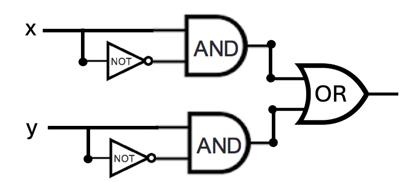
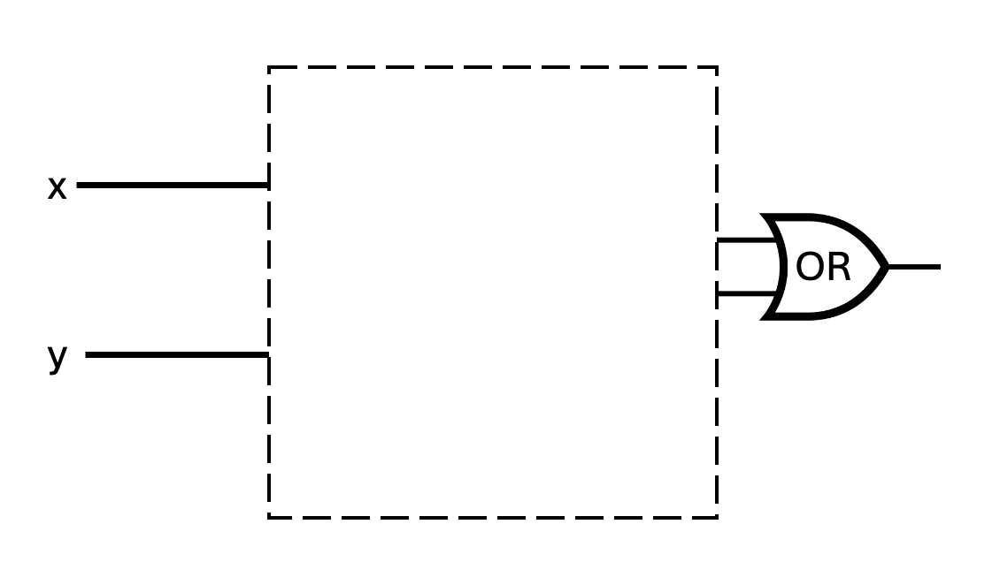
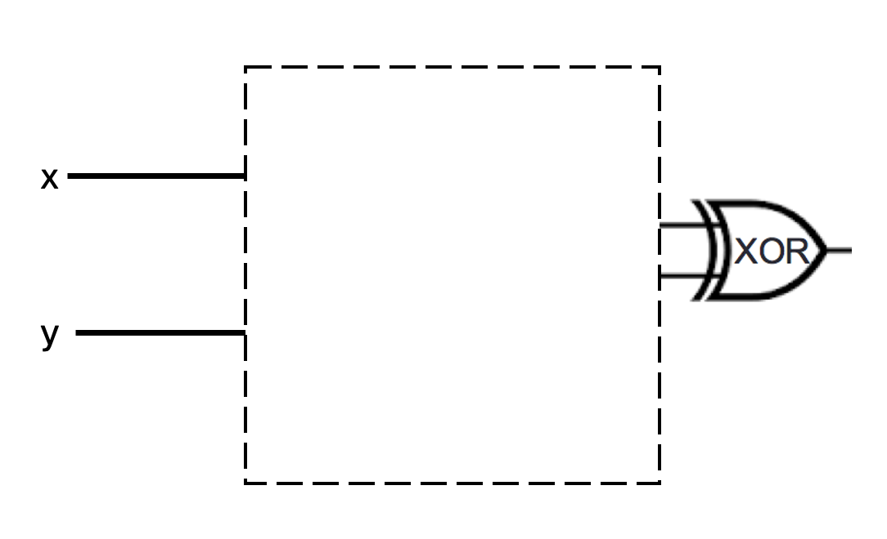
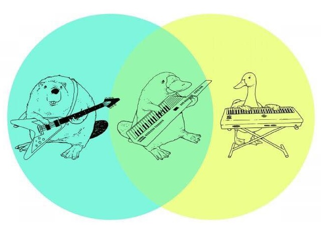
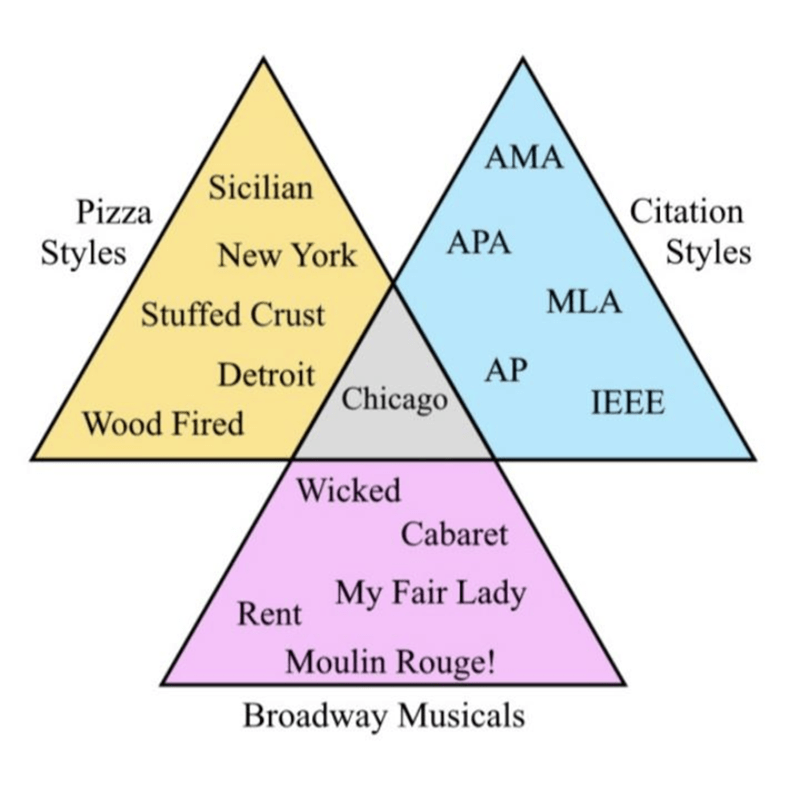
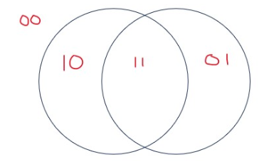
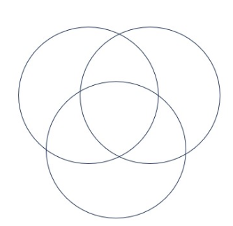
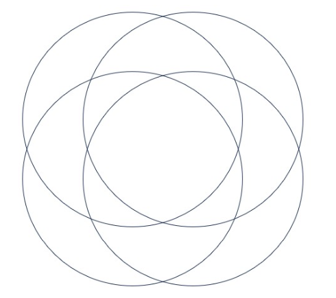
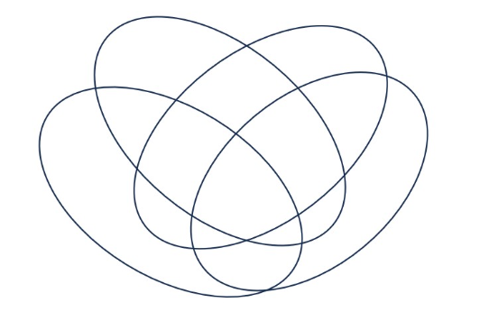
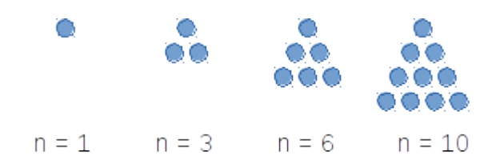

Due: 4/9/24 at 5pm (no penalty late submission until 8am next morning)Due: 4/16/24 at 5pm (no penalty late submission until 8am next morning)Due: 4/23/24 at 5pm (no penalty late submission until 8am next morning)Due: 5/14/24 at 5pm (no penalty late submission until 8am next morning)Due: 5/21/24 at 5pm (no penalty late submission until 8am next morning)Due: 6/6/24 at 5pm (no penalty late submission until 8am next morning)Due: 5/8/24 at 5pm (late submission until 8am next morning) - Extended by 24 hours
In this assignment,
You will practice reading and applying definitions to get comfortable working with mathematical language.
Relevant class material: Week 1.
You will submit this assignment via Gradescope (https://www.gradescope.com) in the assignment called “hw1-definitions-and-notation”.
For all HW assignments: These homework assignments may be done individually or in groups of up to 3 students. Please ensure your name(s) and PID(s) are clearly visible on the first page of your homework submission, start each question on a new page, and upload the PDF to Gradescope. If you’re working in a group, submit only one submission per group: one partner uploads the submission through their Gradescope account and then adds the other group member(s) to the Gradescope submission by selecting their name(s) in the “Add Group Members” dialog box. You will need to re-add your group member(s) every time you resubmit a new version of your assignment.
Each homework question will be graded either for correctness (including clear and precise explanations and justifications of all answers) or fair effort completeness. You may collaborate on “graded for correctness” questions only with CSE 20 students in your group; if your group has questions about a problem, you may ask in drop-in help hours or post a private post (visible only to the Instructors) on Piazza. For “graded for completeness” questions: collaboration is allowed with any CSE 20 students this quarter; if your group has questions about a problem, you may ask in drop-in help hours or post a public post on Piazza.
All submitted homework for this class must be typed. You can use a word processing editor if you like (Microsoft Word, Open Office, Notepad, Vim, Google Docs, etc.) but you might find it useful to take this opportunity to learn LaTeX. LaTeX is a markup language used widely in computer science and mathematics. The homework assignments are typed using LaTeX and you can use the source files as templates for typesetting your solutions.
Integrity reminders
Problems should be solved together, not divided up between the partners. The homework is designed to give you practice with the main concepts and techniques of the course, while getting to know and learn from your classmates.
You may not collaborate on homework questions graded for correctness with anyone other than your group members. You may ask questions about the homework in office hours (of the instructor, TAs, and/or tutors) and on Piazza (as private notes viewable only to the Instructors). You cannot use any online resources about the course content other than the class material from this quarter – this is primarily to ensure that we all use consistent notation and definitions (aligned with the textbook) and also to protect the learning experience you will have when the ‘aha’ moments of solving the problem authentically happen.
Do not share written solutions or partial solutions for homework with other students in the class who are not in your group. Doing so would dilute their learning experience and detract from their success in the class.
Assigned questions
Modeling
(Graded for completeness) 1 In class, we used \(4\)-tuples to represent the user ratings for four movies. This representation is memory-efficient because we use the order of the components in the \(4\)-tuples to represent which move is being rated. However, it is not easily extended when we want to add new movies to the database. Define a new model that would allow us to represent the user ratings of movie databases where we allow for new movies to be added. Use only the data types we have talked about in class: sets, \(n\)-tuples, and strings. Explain the design choices that you used to define your model by referencing properties of the data-type(s) you choose. Demonstrate your model by showing how the rating of the user who dislikes Dune and Oppenheimer and likes Barbie and Nimona is represented.
(Graded for completeness) Colors can be described as amounts of red, green, and blue mixed together 2 Mathematically, a color can be represented as a \(3\)-tuple \((r, g, b)\) where \(r\) represents the red component, \(g\) the green component, \(b\) the blue component and where each of \(r\), \(g\), \(b\) must be a value from this collection of numbers:
\(\{\)0, 1, 2, 3, 4, 5, 6, 7, 8, 9, 10, 11, 12, 13, 14, 15, 16, 17, 18, 19, 20, 21, 22, 23, 24, 25, 26, 27, 28, 29, 30, 31, 32, 33, 34, 35, 36, 37, 38, 39, 40, 41, 42, 43, 44, 45, 46, 47, 48, 49, 50, 51, 52, 53, 54, 55, 56, 57, 58, 59, 60, 61, 62, 63, 64, 65, 66, 67, 68, 69, 70, 71, 72, 73, 74, 75, 76, 77, 78, 79, 80, 81, 82, 83, 84, 85, 86, 87, 88, 89, 90, 91, 92, 93, 94, 95, 96, 97, 98, 99, 100, 101, 102, 103, 104, 105, 106, 107, 108, 109, 110, 111, 112, 113, 114, 115, 116, 117, 118, 119, 120, 121, 122, 123, 124, 125, 126, 127, 128, 129, 130, 131, 132, 133, 134, 135, 136, 137, 138, 139, 140, 141, 142, 143, 144, 145, 146, 147, 148, 149, 150, 151, 152, 153, 154, 155, 156, 157, 158, 159, 160, 161, 162, 163, 164, 165, 166, 167, 168, 169, 170, 171, 172, 173, 174, 175, 176, 177, 178, 179, 180, 181, 182, 183, 184, 185, 186, 187, 188, 189, 190, 191, 192, 193, 194, 195, 196, 197, 198, 199, 200, 201, 202, 203, 204, 205, 206, 207, 208, 209, 210, 211, 212, 213, 214, 215, 216, 217, 218, 219, 220, 221, 222, 223, 224, 225, 226, 227, 228, 229, 230, 231, 232, 233, 234, 235, 236, 237, 238, 239, 240, 241, 242, 243, 244, 245, 246, 247, 248, 249, 250, 251, 252, 253, 254, 255\(\}\)
(This is the same definition as in the Week 1 Review quiz.)
Can you find two different \(3\)-tuples that represent colors that are indistinguishable to your eye? You can use the website in the footnote to play around with different choices of red, green, and blue levels to see if you can distinguish between the resulting colors. Why or why not?
A complete answer will include the specific example \(3\)-tuples that work, along with a description of the colors that they represent and why they are indistinguishable, or an explanation of why there can’t be such an example.
Sets and functions
(Graded for correctness) 3 Each of the sets below is described using set builder notation or recursion or as a result of set operations applied to other known sets. Rewrite each of the sets using the roster method.
Remember our discussions of data-types: use clear notation that is consistent with our class notes and definitions to communicate the data-types of the elements in each set.
Sample response that can be used as reference for the detail expected in your answer:
The set \(\{ \texttt{A}\} \circ \{ \texttt{A}\texttt{U}, \texttt{A}\texttt{C}, \texttt{A}\texttt{G}\}\) can be written using the roster method as \[\{ \texttt{A}\texttt{A}\texttt{U}, \texttt{A}\texttt{A}\texttt{C}, \texttt{A}\texttt{A}\texttt{G}\}\] because set-wise concatenation gives a set whose elements are all possible results of concatenating an element of the left set with an element of the right set. Since the left set in this example only has one element, namely \(\texttt{A}\), each of the elements of the set we described starts with \(\texttt{A}\). There are three elements of this set, one for each of the distinct elements of the right set.
\[\{ n \in \mathbb{Z}^+ \mid n \leq 3 \} \times \{ m \in \mathbb{N} \mid m \leq 3\}\] (Note: typo fixed Apr 3)
The set \(X\) defined recursively as \[\begin{array}{ll} \textrm{Basis Step: } & 1 \in X, 3 \in X, 5 \in X \\ \textrm{Recursive Step: } & \textrm{If the integer } n \in X \textrm{, then the result of multiplying } n \textrm{ by } -1 \textrm{ is in }X \end{array}\]
\[\{ x \in S \mid rnalen(x) = 2 \} \circ \{x \in S \mid rnalen(x) = 0 \}\] where \(S\) is the set of RNA strands and \(rnalen\) is the recursively defined function that we discussed in class, \[\begin{array}{llll} & & \textit{rnalen} : S & \to \mathbb{Z}^+ \\ \textrm{Basis Step:} & \textrm{If } b \in B\textrm{ then } & \textit{rnalen}(b) & = 1 \\ \textrm{Recursive Step:} & \textrm{If } s \in S\textrm{ and }b \in B\textrm{, then } & \textit{rnalen}(sb) & = 1 + \textit{rnalen}(s) \end{array}\]
\[\{ (r,g,b) \in C \mid r+g+b = 2 \textrm{ and } g=1\}\] where \(C = \{ (r,g,b) \mid 0 \leq r \leq 255, 0 \leq g \leq 255, 0 \leq b \leq 255, r \in \mathbb{N}, g \in \mathbb{N}, b \in \mathbb{N} \}\) is the set that you worked with in Monday’s review quiz.
(Graded for correctness) Recall the function which takes an ordered pair of ratings \(4\)-tuples and returns a measure of the difference between them \[d_0: \{-1,0,1\}^4 \times \{-1,0,1\}^4 \to \mathbb{R}\] given by \[d_0 (~(~ (x_1, x_2, x_3, x_4), (y_1, y_2, y_3, y_4) ~) ~) = \sqrt{ (x_1 - y_1)^2 + (x_2 - y_2)^2 + (x_3 -y_3)^2 + (x_4 -y_4)^2}\]
Define a new function which we’ll call \(d_{new}\) with the same domain \(\{-1,0,1\}^4 \times \{-1,0,1\}^4\) and codomain \(\mathbb{R}\) but where there is some example pair of ratings \(4\)-tuples \[(~ (x_1, x_2, x_3, x_4), (y_1, y_2, y_3, y_4)~)\] where \[d_0 (~(~ (x_1, x_2, x_3, x_4), (y_1, y_2, y_3, y_4) ~) ~) \neq d_{new} (~(~ (x_1, x_2, x_3, x_4), (y_1, y_2, y_3, y_4) ~) ~)\]
Your answer should include both a precise and clear definition for the rule defining \(d_{new}\) which unambiguously specifies output for each input of the function and the example ordered pair of ratings \(4\)-tuples that demonstrate that the functions are not equal. Also include a justification of your answers with (clear, correct, complete) calculations for each of the function applications and/or references to definitions and connecting them with the desired conclusion.
(Graded for correctness) A function basecount that computes the number of a given base \(b\) appearing in a RNA strand \(s\) is defined recursively:
\[\begin{array}{llll} & \textit{basecount} : S \times B & \to \mathbb{N} &\\ \textrm{Basis Step:} & \\ \textrm{If } b_1 \in B, b_2 \in B & \textit{basecount}(~(b_1, b_2)~) & = \begin{cases} 1 & \textrm{when } b_1 = b_2 \\ 0 & \textrm{when } b_1 \neq b_2 \\ \end{cases}& \\ \textrm{Recursive Step:} & \\ \textrm{If } s \in S, b_1 \in B, b_2 \in B &\textit{basecount}(~(s b_1, b_2)~) & = \begin{cases} 1 + \textit{basecount}(~(s, b_2)~) & \textrm{when } b_1 = b_2 \\ \textit{basecount}(~(s, b_2)~) & \textrm{when } b_1 \neq b_2 \\ \end{cases} & \end{array}\] Consider the function application \[basecount( ~(\texttt{A}\texttt{C}\texttt{A}\texttt{U}, \texttt{A})~)\] What is the input? What is the output? Give an example of a different choice of input that gives the same output.
Your answer should include clearly labeled answers to each of the three parts of the question, along with a justification for the values of the applications that makes specific reference to the parts of the recursive definition of the \(basecount\) function used to calculate it.
In this assignment,
You will practice applying functions and tracing algorithms in multiple contexts, and exploring properties of positional number representations.
Relevant class material: Week 2.
You will submit this assignment via Gradescope (https://www.gradescope.com) in the assignment called “hw2-numbers”.
For all HW assignments: These homework assignments may be done individually or in groups of up to 3 students. Please ensure your name(s) and PID(s) are clearly visible on the first page of your homework submission, start each question on a new page, and upload the PDF to Gradescope. If you’re working in a group, submit only one submission per group: one partner uploads the submission through their Gradescope account and then adds the other group member(s) to the Gradescope submission by selecting their name(s) in the “Add Group Members” dialog box. You will need to re-add your group member(s) every time you resubmit a new version of your assignment.
Each homework question will be graded either for correctness (including clear and precise explanations and justifications of all answers) or fair effort completeness. You may collaborate on “graded for correctness” questions only with CSE 20 students in your group; if your group has questions about a problem, you may ask in drop-in help hours or post a private post (visible only to the Instructors) on Piazza. For “graded for completeness” questions: collaboration is allowed with any CSE 20 students this quarter; if your group has questions about a problem, you may ask in drop-in help hours or post a public post on Piazza.
All submitted homework for this class must be typed. You can use a word processing editor if you like (Microsoft Word, Open Office, Notepad, Vim, Google Docs, etc.) but you might find it useful to take this opportunity to learn LaTeX. LaTeX is a markup language used widely in computer science and mathematics. The homework assignments are typed using LaTeX and you can use the source files as templates for typesetting your solutions.
Integrity reminders
Problems should be solved together, not divided up between the partners. The homework is designed to give you practice with the main concepts and techniques of the course, while getting to know and learn from your classmates.
You may not collaborate on homework questions graded for correctness with anyone other than your group members. You may ask questions about the homework in office hours (of the instructor, TAs, and/or tutors) and on Piazza (as private notes viewable only to the Instructors). You cannot use any online resources about the course content other than the class material from this quarter – this is primarily to ensure that we all use consistent notation and definitions (aligned with the textbook) and also to protect the learning experience you will have when the ‘aha’ moments of solving the problem authentically happen.
Do not share written solutions or partial solutions for homework with other students in the class who are not in your group. Doing so would dilute their learning experience and detract from their success in the class.
Assigned questions
Functions and algorithms: in this question you’ll explore the properties of the (integer) power and logarithm functions. We’ll use some definitions we introduced in class this week, namely the function \(b^i\) with domain \(\mathbb{Z}^+ \times \mathbb{N}\) and codomain \(\mathbb{N}\) defined recursively by \[\begin{aligned} &\textrm{Basis Step:} \\ &b^0 = 1 \\ &\textrm{Recursive Step:}\\ &\textrm{If } i \in \mathbb{N}, b^{i+1} = b \cdot b^i \end{aligned}\] and the algorithm:
procedure \(logb\)(\(b\),\(n\): positive integers with \(b > 1\)) \(i\) := \(0\) while \(n\) > \(b-1\) \(i\) := \(i + 1\) \(n\) := \(n\) div \(b\) return \(i\) \(\{ i\) holds the integer part of the base \(b\) logarithm of \(n\}\)
(Graded for correctness) 4 Choose a positive integer \(b\) between \(3\) and \(6\) (inclusive) and choose a nonnegative integer \(i\) between \(2\) and \(5\) (inclusive). Demonstrate how to calculate the result of the \(logb\) algorithm (procedure) when its input is the base \(b\) you chose and \(n = b^i\) (for the \(i\) you choose.) A complete answer will include the specific choice of \(b\) and \(i\), along with trace of the calculations of \(b^i\) and the computation of the algorithm, including (clear, correct, complete) calculations for each of the function applications and/or references to definitions and a trace table for algorithm that includes the values of all relevant variables at each iteration (See the annotated Week 2 notes for the level of detail expected in a trace of a function application and a trace table).
(Graded for correctness) Now we’ll go in other order: Demonstrate how to calculate the result of \(7^y\) where \(y\) is the result of the \(logb\) algorithm (procedure) when its input is \(b=7\) and \(n=30\). A complete answer will include clearly labelled traces of the calculations of \(b^i\) and the computation of the algorithm, including (clear, correct, complete) calculations for each of the function applications and/or references to definitions and a trace table for algorithm that includes the values of all relevant variables at each iteration (See the annotated Week 2 notes for the level of detail expected in a trace of a function application and a trace table).
(Graded for completeness) 5 Logarithms and powers are supposed to “undo" one another. Explain whether your work in parts (a) and (b) supports that idea, whether you saw anything confusing or surprising about these calculations, and how to explain what you saw.
Base expansions
(Graded for completeness) Pick an integer between \(50\) and \(1000\) (inclusive) that you (or one of your group members) came across at some point this week. In a sentence or two, give some context for why you’re choosing this number). Write the base expansion of your chosen number in base \(2\) (binary), base \(3\) (ternary), base \(4\), and base \(16\) (hexadecimal).
(Graded for correctness) What is the smallest width \(w\) in which they could write your chosen number in base \(8\) (octal) fixed-width \(w\)? Justify your answer with reference to the definitions of fixed-width expansions and relevant calculations.
(Graded for correctness) Express in roster method the set of numbers between \(1\) and \(2\) (exclusive) that be written without error (full precision) in binary fixed width expansion with integer part width \(3\) and fractional part width \(2\). Justify your answer with reference to the definitions of fixed-width expansions and relevant calculations.
(Graded for correctness) Consider the strings of \(1\)s that have length \(3\), \(5\), \(7\), and \(10\). Calculate the numbers
\([111]_{s,3}\)
\([11111]_{s,5}\)
\([1111111]_{s,7}\)
\([1111111111]_{s,10}\)
\([111]_{2c,3}\)
\([11111]_{2c,5}\)
\([1111111]_{2c,7}\)
\([1111111111]_{2c,10}\)
Justify your answers with specific reference to the definitions of sign-magnitude and \(2\)s complement expansions and relevant calculations.
(Graded for completeness) What patterns do you notice in your calculations in part (d)?
Multiple representations
Recall that, mathematically, a color can be represented as a \(3\)-tuple \((r, g, b)\) where \(r\) represents the red component, \(g\) the green component, \(b\) the blue component and where each of \(r\), \(g\), \(b\) must be from the collection \(\{x \in \mathbb{N}\mid 0 \leq x \leq 255 \}\). As an alternative representation, in this assignment we’ll use base \(b\) fixed-width expansions to represent colors as individual numbers (this definition was introduced in this week’s Review quiz).
Definition: A hex color is a nonnegative integer, \(n\), that has a base \(16\) fixed-width \(6\) expansion \[n = (r_1r_2g_1g_2b_1b_2)_{16,6}\] where \((r_1r_2)_{16,2}\) is the red component, \((g_1g_2)_{16,2}\) is the green component, and \((b_1b_2)_{16,2}\) is the blue.
For this question, let’s call the set of hex colors \(H\). In the Week 2 Review quiz (Question 3d), we explored a few different set builder definitions for \(H\).
(Graded for completeness) Rewrite the set builder definition of a set below so that it refers to colors rather than numbers: \(\{ c \in H \mid c \mod 256 = 0\}\). A complete answer will justify the new set builder definition by connection with the definition of hex colors and how it impacts the colors that satisfy the specific property for this set.
(Graded for correctness) Rewrite the set builder definition of a set below so that it refers to colors rather than numbers: \(\{ c \in H \mid c < 65536\}\). A complete answer will justify the new set builder definition by connection with the definition of hex colors and how it impacts the colors that satisfy the specific property for this set.
(Graded for correctness) In art, we can mix two colors to get a new color. For example, red and blue make purple, blue and yellow make green, red and yellow make orange. A mathematical definition of hex color mixing would be a function with domain \(H \times H\) and codomain \(H\) where the result of applying this function to an input \((n_1, n_2)\) is the hex color that results from mixing the hex colors \(n_1\) and \(n_2\).
Sample work for a related question that can be used as reference for the detail expected in your answer: Consider the attempted mathematical definition \(f_1: H\times H \to H\) given by \[f_1 (~(n_1, n_2) ~) = n_1 + n_2\] We will show that this function is not well-defined so it cannot give a hex color mixing definition. The reason it is not well-defined is that the application of the rule sometimes gives values that are not in the stated codomain. To see this, we need an example input to \(f_1\) for which the output of the rule is not in \(H\). Here is one such example: \((n_1, n_2) = (~(FFFFFF)_{16,6}, (FFFFFF)_{16,6}~)\). This example is in \(H \times H\) because \((FFFFFF)_{16,6}\) is a nonnegative integer that has a base \(16\) fixed-width \(6\) expansion so it is a hex color. We now apply the definition of the rule in \(f_1\): \[\begin{aligned} f_1 (~(n_1, n_2) ~) &= f_1 ( (~(FFFFFF)_{16,6}, (FFFFFF)_{16,6}~) ) = (FFFFFF)_{16,6} + (FFFFFF)_{16,6} \\ &= 2 \left( 15\cdot 16^5 + 15\cdot 16^4 + 15 \cdot 16^3 + 15 \cdot 16^2 + 15 \cdot 16^1 + 15 \cdot 16^0 \right) \\ &= 2 \cdot 15 \cdot (1048576 + 65536 + 4096 + 256 + 16 + 1) = 2 \cdot 15 \cdot 1118481 = 33554430 \end{aligned}\] This is not a hex color because it is greater than or equal to \(16^6 = 16777216\), so (using the Week 2 notes on which numbers can be represented with fixed-width expansions) it does not have a hexadecimal fixed width \(6\) expansion.
In this question, we’ll look at another attempted mathematical definition for hex color mixing. We define \(f_2: H\times H \to H\) given by \[f_2 (~(n_1, n_2) ~) = (n_1 + n_2) \textbf{ div } 2\]
This is a well-defined function. You do not need to prove this or hand it in, but it’s good practice to make sure you understand why it’s well-defined. Notice that the function application \[f_2 ( ~(~ (FF0000)_{16,6} , (FFFE00)_{16,6} ~)~)\] can be calculated as: \[\begin{aligned} f_2&(((FF0000)_{16,6}, (FFFE00)_{16,6}))= ((FF0000)_{16,6} + (FFFE00)_{16,6})) \textbf{ div } 2\\ &= \big(~ \left(15\cdot16^5 + 15\cdot16^4 + 0\cdot16^3 + 0\cdot16^2 + 0\cdot16^1 + 0\cdot16^0 \right) \\ &~~~~+~ \left((15\cdot16^5 + 15\cdot16^4 + 15\cdot16^3 + 14\cdot16^2 + 0\cdot16^1 + 0\cdot16^0\right )~\big )\textbf{ div } 2\\ &= (16711680 + 16776704) \textbf{ div } 2 = 33488384 \textbf{ div } 2 = 16744192 \end{aligned}\] Since this is less than \(16^6 = 16777216\), we can represent it using base \(16\) fixed-width \(6\):. \[(16744192)_{10} = 15\cdot16^5 + 15\cdot16^4 + 7\cdot16^3 + 15\cdot16^2 + 0\cdot16^1 + 0\cdot16^0 = (FF7F00)_{16,6}\]
Using the web tool https://www.w3schools.com/colors/colors_rgb.asp, we can verify that \((FF0000)_{16,6}\) is red, \((FFFE00)_{16,6}\) is yellow, and \((FF7F00)_{16,6}\) is orange.
Show that \(f_2\) does not work as a hex color mixing definition by finding another ordered pair of hex colors for which the result of applying \(f_2\) does not give the expected hex color. Include the numerical description of each colors you mention, alongside a description of them in English. Describe how you know what these colors are (if you use a web color tool, include its URL in your submission writeup; if not, describe your reasoning). Justify your example with (clear, correct, complete) calculations and/or references to definitions, and connecting them with the desired conclusion.
In this assignment, you will consider how circuits and logic can be used to represent mathematical claims. You will use propositional operators to express and evaluate these claims.
Relevant class material: Week 2 and Week 3.
You will submit this assignment via Gradescope (https://www.gradescope.com) in the assignment called “hw3-circuits-and-logic”.
For all HW assignments: These homework assignments may be done individually or in groups of up to 3 students. Please ensure your name(s) and PID(s) are clearly visible on the first page of your homework submission, start each question on a new page, and upload the PDF to Gradescope. If you’re working in a group, submit only one submission per group: one partner uploads the submission through their Gradescope account and then adds the other group member(s) to the Gradescope submission by selecting their name(s) in the “Add Group Members” dialog box. You will need to re-add your group member(s) every time you resubmit a new version of your assignment.
Each homework question will be graded either for correctness (including clear and precise explanations and justifications of all answers) or fair effort completeness. You may collaborate on “graded for correctness” questions only with CSE 20 students in your group; if your group has questions about a problem, you may ask in drop-in help hours or post a private post (visible only to the Instructors) on Piazza. For “graded for completeness” questions: collaboration is allowed with any CSE 20 students this quarter; if your group has questions about a problem, you may ask in drop-in help hours or post a public post on Piazza.
All submitted homework for this class must be typed. You can use a word processing editor if you like (Microsoft Word, Open Office, Notepad, Vim, Google Docs, etc.) but you might find it useful to take this opportunity to learn LaTeX. LaTeX is a markup language used widely in computer science and mathematics. The homework assignments are typed using LaTeX and you can use the source files as templates for typesetting your solutions.
Integrity reminders
Problems should be solved together, not divided up between the partners. The homework is designed to give you practice with the main concepts and techniques of the course, while getting to know and learn from your classmates.
You may not collaborate on homework questions graded for correctness with anyone other than your group members. You may ask questions about the homework in office hours (of the instructor, TAs, and/or tutors) and on Piazza (as private notes viewable only to the Instructors). You cannot use any online resources about the course content other than the class material from this quarter – this is primarily to ensure that we all use consistent notation and definitions (aligned with the textbook) and also to protect the learning experience you will have when the ‘aha’ moments of solving the problem authentically happen.
Do not share written solutions or partial solutions for homework with other students in the class who are not in your group. Doing so would dilute their learning experience and detract from their success in the class.
Assigned questions
Fixed-width addition.
(Graded for completeness) 6 Choose example width \(5\) first summand and width \(5\) second summand so that in the binary fixed-width addition (adding one bit at time, using the usual column-by-column and carry arithmetic, and ignoring the carry from the leftmost column), the example satisfies all three conditions below simultaneously
When interpreting each of the summands and the result in binary fixed-width 5, the result represents the actual value of the sum of the summands and
when interpreting each of the summands and the sum in sign-magnitude width 5, the result represents the actual value of the sum of the summands and
when interpreting each of the summands and the sum in 2s complement width 5, the result represents the actual value of the sum of the summands.
(Graded for correctness) 7 Choose an example width \(5\) first summand and second summand so that in the binary fixed-width addition (adding one bit at time, using the usual column-by-column and carry arithmetic, and ignoring the carry from the leftmost column), the example satisfies all three conditions below simultaneously
When interpreting each of the summands and the result in binary fixed-width 5, the result does not represent the actual value of the sum of the summands and
when interpreting each of the summands and the sum in sign-magnitude width 5, the result does not represents the actual value of the sum of the summands and
when interpreting each of the summands and the sum in 2s complement width 5, the result represents the actual value of the sum of the summands.
A complete solution will clearly specify each summand and the result of binary fixed-width addition with this choice of summands; will specify the value of each summand and the result for binary fixed-width 5, sign-magnitude width 5, and 2s complement width 5 (and include calculations connecting with the definitions of these representations to explain these values); and a conclusion connecting the calculations to the properties laid out in the question.
Circuits.
(Graded for completeness) Consider the circuit below with inputs \(x\) and \(y\). Identify a pair of gates that could be switched without changing the input-output table of the circuit. If you do, write out the input-output table that results, and briefly explain why this choice of gates works. If there is no such pair of gates, explain why not with reference to the definitions of the logic gates.

(Graded for correctness) Is there a way to fill in the blank portion of the two logic circuits below *with the same gates connected in the same way* so that the resulting circuits have the same input-output value *even though* one uses an OR gate at the end and the other uses an XOR gate? If so, design the circuit that would be used, write out the input-output table that results, and briefly explain why your design works. If not, explain why not with reference to the definitions of the logic gates.
2


Compound propositions. The set of strings of length \(4\) whose characters are \(0\)s or \(1\)s is the result of four successive set-wise concatenations: \(\{0,1\} \circ \{0,1\} \circ \{0,1\}\circ \{0,1\}\). Let’s call this set \(X_4\). Consider the function \(f: X_4 \to X_4\) defined by \[f(x) = \begin{cases} y &\text{when $(x)_{2,4} < 15$ and $(y)_{2,4} = (x)_{2,4} + 1$}\\ 1111 &\text{when $x = 1111$} \end{cases}\] for each \(x \in X_4\). In other words, we can describe the function as: \(f\) takes a string, interprets it as the binary fixed-width \(4\) expansion of an integer, and then adds \(1\) to that integer (unless \(x\) is already representing the greatest integer that can be represented in binary fixed-width \(4\)) and outputs the binary fixed-width \(4\) expansion of the result.
(Graded for completeness) Fill in the blanks in the following input-output definition table with four inputs \(x_3\), \(x_2\), \(x_1\), \(x_0\) and four outputs \(y_3\), \(y_2\), \(y_1\), \(y_0\) so that \(f(x_3x_2x_1x_0) = y_3y_2y_1y_0\).
| \(x_3\) | \(x_2\) | \(x_1\) | \(x_0\) | \(y_3\) | \(y_2\) | \(y_1\) | \(y_0\) |
|---|---|---|---|---|---|---|---|
| \(1\) | \(1\) | \(1\) | \(1\) | \(1\) | \(1\) | BLANK1 | \(1\) |
| \(1\) | \(1\) | \(1\) | \(0\) | \(1\) | \(1\) | \(1\) | \(1\) |
| \(1\) | \(1\) | \(0\) | \(1\) | \(1\) | BLANK2 | \(1\) | \(0\) |
| \(1\) | \(1\) | \(0\) | \(0\) | \(1\) | \(1\) | \(0\) | \(1\) |
| \(1\) | \(0\) | \(1\) | \(1\) | \(1\) | \(1\) | \(0\) | \(0\) |
| \(1\) | \(0\) | \(1\) | \(0\) | \(1\) | \(0\) | \(1\) | \(1\) |
| \(1\) | \(0\) | \(0\) | \(1\) | \(1\) | \(0\) | \(1\) | \(0\) |
| \(1\) | \(0\) | \(0\) | \(0\) | BLANK3 | \(0\) | \(0\) | \(1\) |
| \(0\) | \(1\) | \(1\) | \(1\) | \(1\) | \(0\) | \(0\) | \(0\) |
| \(0\) | \(1\) | \(1\) | \(0\) | \(0\) | \(1\) | \(1\) | BLANK4 |
| \(0\) | \(1\) | \(0\) | \(1\) | \(0\) | \(1\) | \(1\) | BLANK5 |
| \(0\) | \(1\) | \(0\) | \(0\) | \(0\) | \(1\) | \(0\) | \(1\) |
| \(0\) | \(0\) | \(1\) | \(1\) | \(0\) | \(1\) | \(0\) | \(0\) |
| \(0\) | \(0\) | \(1\) | \(0\) | \(0\) | \(0\) | \(1\) | \(1\) |
| \(0\) | \(0\) | \(0\) | \(1\) | \(0\) | \(0\) | \(1\) | \(0\) |
| \(0\) | \(0\) | \(0\) | \(0\) | BLANK6 | \(0\) | \(0\) | \(1\) |
(Graded for correctness) Construct an expression (as a compound proposition) for \(y_0\) in terms of the inputs \(x_3, x_2, x_1, x_0\). Justify your expression by referring to the definition of the logic gates XOR, AND, OR, NOT and the definition of the function \(f\). Hint: our work on the half-adder might be helpful.
(Graded for correctness) Construct an expression (as a compound proposition) for \(y_1\) in terms of the inputs \(x_3, x_2, x_1, x_0\). Justify your expression by referring to the definition of the logic gates XOR, AND, OR, NOT and the definition of the function \(f\). Hint: our work on the half-adder might be helpful.
(Graded for completeness) Draw a combinatorial circuit corresponding to these compound propositions. Remember that the symbols for the inputs will be on the left-hand-side and the symbol for the outputs \(y_0\) and \(y_1\) will be on the right-hand side. Use gates (draw the appropriate shapes and add labels for clarity) and wires to connect the inputs appropriately to give the output.
(Graded for completeness) Construct expressions (as a compound propositions) for \(y_2\) and \(y_3\) in terms of the inputs \(x_3, x_2, x_1, x_0\). Are these similar to the expressions for \(y_0\) and \(y_1\)?
Logical Equivalence. Imagine a friend suggests the following argument to you: “The compound proposition \[(x \lor y) \land z\] is logically equivalent to \[x \lor (y \land z)\] because I can transform one to the other using the following sequence of logical equivalences: \[(x \lor y) \land z \equiv (x \lor (y \land y)) \land z \equiv x \lor ( (y \lor y) \land z) \equiv x \lor (y \land z)\] because \(y\) is logically equivalent to both \(y \land y\) and to \(y \lor y\)".
(Graded for correctness) Prove to your friend that they made a mistake by giving a truth assignment to the propositional variables \(x,y,z\) so that the two compound propositions \((x \lor y) \land z\) and \(x \lor (y \land z)\) have different truth values. Justify your choice by evaluating these compound propositions using the definitions of the logical connectives and include enough intermediate steps so that a student in CSE 20 who may be struggling with the material can still follow along with your reasoning.
(Graded for completeness) Help your friend find the problem in their argument by pointing out which step(s) were incorrect.
(Graded for completeness) Give three different compound propositions that are actually logically equivalent to (and not the same as) \[(x \lor y) \land z\] Justify each one of these logical equivalences either by applying a sequence of logical equivalences or using a truth table. Notice that you can use other logical operators (e.g. \(\lnot, \lor, \land, \oplus, \to, \leftrightarrow\)) when constructing your compound propositions.
Bonus; not for credit (do not hand in): How would you translate each of the equivalent compound propositions in English? Does doing so help illustrate why they are equivalent?
In this assignment, you will use propositional and predicate logic to evaluate statements and arguments. You will analyze statements and determine if they are true or false using valid proof strategies. You will also determine if candidate arguments are valid.
Relevant class material: Weeks 4,5,6.
You will submit this assignment via Gradescope (https://www.gradescope.com) in the assignment called “hw4-proofs-and-sets”.
For all HW assignments: These homework assignments may be done individually or in groups of up to 3 students. Please ensure your name(s) and PID(s) are clearly visible on the first page of your homework submission, start each question on a new page, and upload the PDF to Gradescope. If you’re working in a group, submit only one submission per group: one partner uploads the submission through their Gradescope account and then adds the other group member(s) to the Gradescope submission by selecting their name(s) in the “Add Group Members” dialog box. You will need to re-add your group member(s) every time you resubmit a new version of your assignment.
Each homework question will be graded either for correctness (including clear and precise explanations and justifications of all answers) or fair effort completeness. You may collaborate on “graded for correctness” questions only with CSE 20 students in your group; if your group has questions about a problem, you may ask in drop-in help hours or post a private post (visible only to the Instructors) on Piazza. For “graded for completeness” questions: collaboration is allowed with any CSE 20 students this quarter; if your group has questions about a problem, you may ask in drop-in help hours or post a public post on Piazza.
All submitted homework for this class must be typed. You can use a word processing editor if you like (Microsoft Word, Open Office, Notepad, Vim, Google Docs, etc.) but you might find it useful to take this opportunity to learn LaTeX. LaTeX is a markup language used widely in computer science and mathematics. The homework assignments are typed using LaTeX and you can use the source files as templates for typesetting your solutions.
Integrity reminders
Problems should be solved together, not divided up between the partners. The homework is designed to give you practice with the main concepts and techniques of the course, while getting to know and learn from your classmates.
You may not collaborate on homework questions graded for correctness with anyone other than your group members. You may ask questions about the homework in office hours (of the instructor, TAs, and/or tutors) and on Piazza (as private notes viewable only to the Instructors). You cannot use any online resources about the course content other than the class material from this quarter – this is primarily to ensure that we all use consistent notation and definitions (aligned with the textbook) and also to protect the learning experience you will have when the ‘aha’ moments of solving the problem authentically happen.
Do not share written solutions or partial solutions for homework with other students in the class who are not in your group. Doing so would dilute their learning experience and detract from their success in the class.
In your proofs and disproofs of statements below, justify each step by reference to a component of the following proof strategies we have discussed so far, and/or to relevant definitions and calculations.
A counterexample can be used to prove that \(\forall x P(x)\) is false.
A witness can be used to prove that \(\exists x P(x)\) is true.
Proof of universal by exhaustion: To prove that \(\forall x \, P(x)\) is true when \(P\) has a finite domain, evaluate the predicate at each domain element to confirm that it is always T.
Proof by universal generalization: To prove that \(\forall x \, P(x)\) is true, we can take an arbitrary element \(e\) from the domain and show that \(P(e)\) is true, without making any assumptions about \(e\) other than that it comes from the domain.
To prove that \(\exists x P(x)\) is false, write the universal statement that is logically equivalent to its negation and then prove it true using universal generalization.
Strategies for conjunction: To prove that \(p \land q\) is true, have two subgoals: subgoal (1) prove \(p\) is true; and, subgoal (2) prove \(q\) is true. To prove that \(p \land q\) is false, it’s enough to prove that \(p\) is false. To prove that \(p \land q\) is false, it’s enough to prove that \(q\) is false.
Proof of Conditional by Direct Proof: To prove that the implication \(p \to q\) is true, we can assume \(p\) is true and use that assumption to show \(q\) is true.
Proof of Conditional by Contrapositive Proof: To prove that the implication \(p \to q\) is true, we can assume \(\neg q\) is true and use that assumption to show \(\neg p\) is true.
Proof by Cases: To prove \(q\) when we know \(p_1 \lor p_2\), show that \(p_1 \to q\) and \(p_2 \to q\).
Assigned questions
Evaluating predicates. Consider the following predicates, each of which has as its domain the set of all bitstrings whose leftmost bit is \(1\)
\(E(x)\) is \(T\) exactly when \((x)_{2}\) is even, and is \(F\) otherwise
\(L(x)\) is \(T\) exactly when \((x)_2 < 15\), and is \(F\) otherwise
\(M(x)\) is \(T\) exactly when \((x)_2 > 2\) and is \(F\) otherwise.
Sample response that can be used as reference for the detail expected in your answer: To prove that the statement \[\forall x ~L(x)\] is false, we can use the counterexample \(x = 1111\), which is a bitstring whose leftmost bit is \(1\) (so is in the domain). Applying the definition of \(L(x)\), since \((1111)_2 = 1 \cdot 2^3 + 1\cdot 2^2 + 1 \cdot 2^1 + 1 \cdot 2^0 = 8 + 4+2+1 = 15\) which is not (strictly) less than \(15\), we have that \(L(1111) = F\) and so the universal statement is false.
(Graded for correctness) 8 Use a counterexample to prove that the statement \[\forall x ( ~L(x) \to E(x)~)\] is false.
(Graded for correctness) Use a witness to prove that the statement \[\exists x (~L(x) \land M(x) ~)\] is true.
(Graded for completeness) 9 Translate each of the statements in the previous two parts to English.
Set properties. Let \(W = \mathcal{P}(\{1,2,3,4,5\})\).
Sample response that can be used as reference for the detail expected in your answer for parts (a) and (b) below:
To give an example element in the set \(\{ X \in W ~|~ 1 \in X \} \cap \{ X \in W ~|~ 2 \in X \}\), consider \(\{ 1,2\}\). To prove that this is in the set, by definition of intersection, we need to show that \(\{1,2\} \in \{ X \in W ~|~ 1 \in X \}\) and that \(\{1,2\} \in \{ X \in W ~|~ 2 \in X \}\).
By set builder notation, elements in \(\{ X \in W ~|~ 1 \in X \}\) have to be elements of \(W\) which have \(1\) as an element. By definition of power set, elements of \(W\) are subsets of \(\{1,2,3,4,5\}\). Since each element in \(\{1,2\}\) is an element of \(\{1,2,3,4,5\}\), \(\{1,2\}\) is a subset of \(\{1,2,3,4,5\}\) and hence is an element of \(W\). Also, by roster method, \(1 \in \{1,2\}\). Thus, \(\{1,2\}\) satisfies the conditions for membership in \(\{ X \in W ~|~ 1 \in X \}\).
Similarly, by set builder notation, elements in \(\{ X \in W ~|~ 2 \in X \}\) have to be elements of \(W\) which have \(2\) as an element. By definition of power set, elements of \(W\) are subsets of \(\{1,2,3,4,5\}\). Since each element in \(\{1,2\}\) is an element of \(\{1,2,3,4,5\}\), \(\{1,2\}\) is a subset of \(\{1,2,3,4,5\}\) and hence is an element of \(W\). Also, by roster method, \(2 \in \{1,2\}\). Thus, \(\{1,2\}\) satisfies the conditions for membership in \(\{ X \in W ~|~ 2 \in X \}\).
(Graded for correctness) Give two (different) example elements in \[W \times \mathcal{P}(W)\] Justify your examples by explanations that include references to the relevant definitions.
(Graded for correctness) Give one example element in \[\{ X \in W \mid (1 \in X) \land (X \cap \{3,4\} = \emptyset) \}\] Justify your example by explanations that include references to the relevant definitions.
(Graded for completeness) Consider the following statement and attempted proof:
\[\forall A \in W \, \forall B \in W ~\left(~((A \cap B) \subseteq A) \to (A \subseteq B)~\right)\]
(1) Towards a universal generalization argument, choose arbitrary \(A \in W, B \in W\) .
(2) We need to show \(((A \cap B) \subseteq A) \to (A \subseteq B)\).
(3) Towards a proof of the conditional by the contrapositive, assume \(A \subseteq B\), and we need to show that \((A \cap B) \subseteq A\).
(4) By definition of subset inclusion, this means we need to show \(\forall x ~( x \in A \cap B \to x \in A ~)\).
(5) Towards a universal generalization, choose arbitrary \(x\); we need to show that
\(x \in A \cap B \to x \in A\).(6) Towards a direct proof, assume \(x \in A \cap B\), and we need to show \(x \in A\).
(7) By definition of set intersection and set builder notation, we have that \(x \in A \land x \in B\).
(8) By the definition of conjunction, \(x \in A\), which is what we needed to show. QED
Demonstrate that this attempted proof is invalid by providing and justifying a counterexample (disproving the statement). Then, explain why this attempted proof is invalid by identifying in which step a definition or proof strategy is used incorrectly, and describing how the definition or proof strategy was misused.
(Graded for completeness) A Venn diagram is a chart of overlapping regions that illustrates the similarities differences of a collection of sets. You may have seen some examples in memes, including these (from a web search):
 
Mostly we see Venn Diagrams with 2 or 3 circles (or other shapes). In this question, we consider how to draw a Venn Diagram with 4 regions.
Here is a Venn Diagram with 2 circles. Each region is labelled (encoded) with a binary string with 2 bits. Notice that there are four regions: the region outside of the two circles, the region inside the left circle and not the right circle, the region inside the right circle and not the left circle, and the region inside both circles.

Generalize this encoding by encoding each region in this 3 circle Venn Diagram with a unique binary string with 3 bits.

Give an alternate representation of the regions in the 2 circle and 3 circle Venn Diagrams by labelling each circle with a letter (\(X\), \(Y\), \(Z\), or \(A\), \(B\), \(C\), for example) and then expressing each region as the result of combining these with set operations (like union, intersection, and set difference).
Here are two attempts at a Venn Diagram with 4 shapes, one with circles and the other with ellipses.
 
Is there anything missing from either diagram? (How many regions are there? How many regions should there be in order to use each 4 bit binary string exactly once in a generalization of the encoding we saw before?) If you had to choose one of these diagrams, which would you choose, and why?
(This question is adapted from one created by Miles Jones and is used with permission.)
Number properties. Consider the predicate \(F(~(a,b)~) = ``a \text{ is a factor of } b"\) over the domain \(\mathbb{Z}^{\neq 0} \times \mathbb{Z}\). Consider the following quantified statements
2
\(\forall x \in \mathbb{Z} ~(F(~(1,x~)))\)
\(\forall x \in \mathbb{Z}^{\neq 0} ~(F(~(x,1)~))\)
\(\exists x \in \mathbb{Z} ~(F(~(1,x)~))\)
\(\exists x \in \mathbb{Z}^{\neq 0} ~(F(~(x,1)~))\)
\(\forall x \in \mathbb{Z}^{\neq 0} ~\exists y \in \mathbb{Z} ~(F(~(x,y)~))\)
\(\exists x \in \mathbb{Z}^{\neq 0} ~\forall y \in \mathbb{Z} ~(F(~(x,y)~))\)
\(\forall y \in \mathbb{Z} ~\exists x \in \mathbb{Z}^{\neq 0} ~(F(~(x,y)~))\)
\(\exists y \in \mathbb{Z} ~\forall x \in \mathbb{Z}^{\neq 0} ~(F(~(x,y)~))\)
(Graded for completeness) Which of the statements (i) - (viii) is being proved by the following proof:
By universal generalization, choose \(e\) to be an arbitrary integer. We need to show that \(F(~(1,e)~)\). By definition of the predicate \(F\), we can rewrite this goal as \(\exists c \in \mathbb{Z}~(e = c \cdot 1)\). We pick the witness \(c = e\), which is an integer and therefore in the domain. Calculating, \(c \cdot 1 = e \cdot 1 = e\), as required. Since the predicate \(F(1,e)\) evaluates to true for the arbitrary integer \(e\), the claim has been proved. \(\square\)
Hint: it may be useful to identify the key words in the proof that indicate proof strategies.
(Graded for completeness) Which of the statements (i) - (viii) is being disproved by the following proof:
To disprove the statement, we need to find a counterexample. We choose \(2\), a nonzero integer so in the domain. We need to show that \(\lnot F(~(2,1)~)\). By definition of the predicate \(F\), we can rewrite this goal as \(1 \textbf{ mod } 2 \neq 0\). By definition of integer division, since \(1 = 0 \cdot 2 + 1\) (and \(0 \leq 1 < 2\)), \(1 \textbf { mod } 2 = 1\) which is nonzero so the counterexample works to disprove the original statement. \(\square\)
Hint: it may be useful to identify the key words in the proof that indicate proof strategies.
(Graded for correctness of evaluation of statement (is it true or false?) and fair effort completeness of the translation and proof) Translate the statement to English, state whether is it true or false, and then justify your answer (by proving the statement or its negation). \[\exists x \in \mathbb{Z}^{\neq 0}~ \exists y \in \mathbb{Z}^{\neq 0} ~(~\lnot(x = y) \land F(~(x,y)~) \land F(~(y,x)~)~)\]
(Graded for correctness of evaluation of statement (is it true or false?) and fair effort completeness of the translation and of the proof) Translate the statement to English, state whether is it true or false, and then justify your answer (by proving the statement or its negation). \[\forall x \in \mathbb{Z}^{\neq 0}~ \forall y \in \mathbb{Z}^{\neq 0} ~(~F(~(x,y)~) \to \lnot F(~(y,x)~)~)\]
(Graded for correctness of evaluation of statement (is it true or false?) and fair effort completeness of the translation and of the proof) Translate the statement to English, state whether is it true or false, and then justify your answer (by proving the statement or its negation). \[\exists x \in \mathbb{Z}^{\neq 0}~ \exists y \in \mathbb{Z}~(~F(~(x,y)~) \land F(~(x+1, y)~) \land F(~(x+2, y)~)~)\]
(Graded for correctness of evaluation of statement (is it true or false?) and fair effort completeness of the translation and of the proof) Translate the statement to English, state whether is it true or false, and then justify your answer (by proving the statement or its negation). \[\forall x \in \mathbb{Z}^{\neq 0}~ (~F(~(x,x^2)~) \land F(~(x,x^3)~)~)\]
Structural induction. Recall that we define the set of bases as \(B = \{ \texttt{A}, \texttt{C}, \texttt{U}, \texttt{G}\}\). The set of RNA strands \(S\) is defined (recursively) by: \[\begin{array}{ll} \textrm{Basis Step: } & \texttt{A}\in S, \texttt{C}\in S, \texttt{U}\in S, \texttt{G}\in S \\ \textrm{Recursive Step: } & \textrm{If } s \in S\textrm{ and }b \in B \textrm{, then }sb \in S \end{array}\] where \(sb\) is string concatenation. The function rnalen that computes the length of RNA strands in \(S\) is defined recursively by \(rnalen: S \to \mathbb{Z}^+\)
Basis step: If \(b \in B\) then \(rnalen(b) = 1\)
Recursive step: If \(s \in S\) and \(b \in B\), then \(rnalen(sb) = 1 + rnalen(s)\)
The function basecount that computes the number of a given base \(b\) appearing in a RNA strand \(s\) is defined recursively:
\[\begin{array}{llll} & & \textit{basecount} : S \times B & \to \mathbb{N} \\ \textrm{Basis Step:} & \textrm{If } b_1 \in B, b_2 \in B & \textit{basecount}(~(b_1, b_2)~) & = \begin{cases} 1 & \textrm{when } b_1 = b_2 \\ 0 & \textrm{when } b_1 \neq b_2 \\ \end{cases} \\ \textrm{Recursive Step:} & \textrm{If } s \in S, b_1 \in B, b_2 \in B &\textit{basecount}(~(s b_1, b_2)~) & = \begin{cases} 1 + \textit{basecount}(~(s, b_2)~) & \textrm{when } b_1 = b_2 \\ \textit{basecount}(~(s, b_2)~) & \textrm{when } b_1 \neq b_2 \\ \end{cases} \end{array}\]
(Graded for correctness of evaluation of statement (is it true or false?) and fair effort completeness of the translation and proof) Translate the statement to English, state whether is it true or false, and then justify your answer (by proving the statement or its negation). \[\forall b \in B ~\exists s \in S ~(~rnalen(s) = basecount(~(s,b)~)~)\]
(Graded for correctness of evaluation of statement (is it true or false?) and fair effort completeness of the translation and of the proof) Translate the statement to English, state whether is it true or false, and then justify your answer (by proving the statement or its negation). \[\forall s \in S~ (rnalen(s) > basecount( ~(s,\texttt{A})~))\]
(Graded for correctness of evaluation of statement (is it true or false?) and fair effort completeness of the translation and of the proof) Translate the statement to English, state whether is it true or false, and then justify your answer (by proving the statement or its negation). \[\forall s \in S~ \forall b \in B ~( basecount( ~(s,b)~) > 0)\]
In this assignment, you will work with recursively defined sets and functions and prove properties about them, practicing induction and other proof strategies.
Relevant class material: Weeks 5,6,7.
You will submit this assignment via Gradescope (https://www.gradescope.com) in the assignment called “hw5-proofs-and-induction”.
For all HW assignments: These homework assignments may be done individually or in groups of up to 3 students. Please ensure your name(s) and PID(s) are clearly visible on the first page of your homework submission, start each question on a new page, and upload the PDF to Gradescope. If you’re working in a group, submit only one submission per group: one partner uploads the submission through their Gradescope account and then adds the other group member(s) to the Gradescope submission by selecting their name(s) in the “Add Group Members” dialog box. You will need to re-add your group member(s) every time you resubmit a new version of your assignment.
Each homework question will be graded either for correctness (including clear and precise explanations and justifications of all answers) or fair effort completeness. You may collaborate on “graded for correctness” questions only with CSE 20 students in your group; if your group has questions about a problem, you may ask in drop-in help hours or post a private post (visible only to the Instructors) on Piazza. For “graded for completeness” questions: collaboration is allowed with any CSE 20 students this quarter; if your group has questions about a problem, you may ask in drop-in help hours or post a public post on Piazza.
All submitted homework for this class must be typed. You can use a word processing editor if you like (Microsoft Word, Open Office, Notepad, Vim, Google Docs, etc.) but you might find it useful to take this opportunity to learn LaTeX. LaTeX is a markup language used widely in computer science and mathematics. The homework assignments are typed using LaTeX and you can use the source files as templates for typesetting your solutions.
Integrity reminders
Problems should be solved together, not divided up between the partners. The homework is designed to give you practice with the main concepts and techniques of the course, while getting to know and learn from your classmates.
You may not collaborate on homework questions graded for correctness with anyone other than your group members. You may ask questions about the homework in office hours (of the instructor, TAs, and/or tutors) and on Piazza (as private notes viewable only to the Instructors). You cannot use any online resources about the course content other than the class material from this quarter – this is primarily to ensure that we all use consistent notation and definitions (aligned with the textbook) and also to protect the learning experience you will have when the ‘aha’ moments of solving the problem authentically happen.
Do not share written solutions or partial solutions for homework with other students in the class who are not in your group. Doing so would dilute their learning experience and detract from their success in the class.
In your proofs and disproofs of statements below, justify each step by reference to a component of the following proof strategies we have discussed so far, and/or to relevant definitions and calculations.
A counterexample can be used to prove that \(\forall x P(x)\) is false.
A witness can be used to prove that \(\exists x P(x)\) is true.
Proof of universal by exhaustion: To prove that \(\forall x \, P(x)\) is true when \(P\) has a finite domain, evaluate the predicate at each domain element to confirm that it is always T.
Proof by universal generalization: To prove that \(\forall x \, P(x)\) is true, we can take an arbitrary element \(e\) from the domain and show that \(P(e)\) is true, without making any assumptions about \(e\) other than that it comes from the domain.
To prove that \(\exists x P(x)\) is false, write the universal statement that is logically equivalent to its negation and then prove it true using universal generalization.
Strategies for conjunction: To prove that \(p \land q\) is true, have two subgoals: subgoal (1) prove \(p\) is true; and, subgoal (2) prove \(q\) is true. To prove that \(p \land q\) is false, it’s enough to prove that \(p\) is false. To prove that \(p \land q\) is false, it’s enough to prove that \(q\) is false.
Proof of Conditional by Direct Proof: To prove that the implication \(p \to q\) is true, we can assume \(p\) is true and use that assumption to show \(q\) is true.
Proof of Conditional by Contrapositive Proof: To prove that the implication \(p \to q\) is true, we can assume \(\neg q\) is true and use that assumption to show \(\neg p\) is true.
Proof by Cases: To prove \(q\) when we know \(p_1 \lor p_2\), show that \(p_1 \to q\) and \(p_2 \to q\).
Proof by Structural Induction: To prove that \(\forall x \in X \, P(x)\) where \(X\) is a recursively defined set, prove two cases:
| Basis Step: | Show the statement holds for elements specified in the basis step of the definition. |
| Recursive Step: | Show that if the statement is true for each of the elements used to construct new elements in the recursive step of the definition, the result holds for these new elements. |
Proof by Mathematical Induction: To prove a universal quantification over the set of all integers greater than or equal to some base integer \(b\):
| Basis Step: | Show the statement holds for \(b\). |
| Recursive Step: | Consider an arbitrary integer \(n\) greater than or equal to \(b\), assume (as the induction hypothesis) that the property holds for \(n\), and use this and other facts to prove that the property holds for \(n+1\). |
Proof by Strong Induction To prove that a universal quantification over the set of all integers greater than or equal to some base integer \(b\) holds, pick a fixed nonnegative integer \(j\) and then:
| Basis Step: | Show the statement holds for \(b\), \(b+1\), …, \(b+j\). |
| Recursive Step: | Consider an arbitrary integer \(n\) greater than or equal to \(b+j\), assume (as the strong induction hypothesis) that the property holds for each of \(b\), \(b+1\), …, \(n\), and use this and other facts to prove that the property holds for \(n+1\). |
Proof by Contradiction
To prove that a statement \(p\) is true, pick another statement \(r\) and once we show that \(\neg p \to (r \wedge \neg r)\) then we can conclude that \(p\) is true.
Informally The statement we care about can’t possibly be false, so it must be true.
Assigned questions
Mathematical and strong induction for properties of numbers.
(Graded for completeness) 10 Consider each of the following statements and attempted proofs below. Pretend you are the TA/tutor for CSE 20 and grade each of these attempts. In particular, you should give each one a score out of \(5\) points and justify your decisions with specific, actionable, and justified feedback; your explanations should be convincing but brief. Here is the rubric11 you should use:
Induction proof includes correctly executed base case and recursive step (with induction hypothesis, IH, clearly and correctly defined and used). Uses clear and correct calculations and references to definitions in both steps, including using the IH, to conclude both.
Induction proof includes base case and recursive step (with induction hypothesis clearly and mostly correctly defined and used), where base case attempted but incomplete OR, incorrect base element chosen but valid proof made for chosen element, OR induction hypothesis incorrectly stated but correctly used.
Any one of the following: (1) Induction proof with correctly executed base case and recursive step that demonstrates connection between induction hypothesis and property being true for \(n+1\), some missing or incorrect logical glue; (2) Induction proof with missing base case and correctly executed recursive step.
Any one of the following: (1) Induction proof includes attempts at correct steps of an induction proof (base case, recursive step), with significant logical gaps and/or errors; (2) correctly executed base case with missing / incorrect recursive step,
Demonstrates knowledge of proof techniques (e.g. attempts some proof type other than induction, but uses some proof technique correctly) and/or structure of induction argument.
Statement: “the sum of the first \(n\) positive odd integers is \(n^2\)"
Attempted Proof:
Base Case: \(n = 1\)
First odd number is \(1\); \(1^2 = 1\). True.
\((n + 1)^2 = n^2 + 2n + 1\)
\(n^2\) is the sum of the first \(n\) odd numbers, and \(2n + 1\) is the next odd number in the sequence, therefore \((n + 1)^2 =\) the sum of the first \(n + 1\) odd numbers.
Statement: “For every nonnegative integer \(n\), \(3 | n\)." (Recall that the \(\mid\) symbol is used to mean “divides” or “is a factor of”.)
Attempted Proof:
Attempted Proof: We proceed by strong mathematical induction.
Basis step: Indeed, \(3 | 0\) because there is an integer, namely \(0\) such that \(0 = 3\cdot 0\).
Induction step: Let \(k\) be arbitrary. Assume, as the strong induction hypothesis, that for all nonnegative integers \(j\) with \(0 \leq j \leq k\), that \(3 | j\). Write \(k+1 = m + n\), where \(m,n\) are integers less than \(k+1\). By the induction hypothesis, \(3 | m\) and \(3 | n\). That is, there are integers \(a,b\) such that \(m = 3a\) and \(n=3b\). Therefore, \(k+1 = (3a) + (3b) = 3 (a+b)\). We can choose \(a + b\), where we know \(a + b \in \mathbb{Z}\), to show that \(3 | (k+1)\), as required.
(Graded for completeness) Decide whether each statement above is true or false, give correct and complete induction proofs for the true statement(s) and disprove by counterexample for the false statement(s).
(Graded for correctness) Games and induction. The game of Nim-Var is a two-player game (which is a variant of Nim). At the start of the game, there are two piles, each containing \(n\) jelly beans (\(n\) is a positive integer). On a player’s turn, that player picks one of the two piles and does one of the following: either
removes some positive number of jelly beans from that pile, or
moves some positive number of jelly beans (that is less than the current total number of jelly beans in the pile) from that pile to the other. Note: if there is only one jelly bean left in a pile, the player cannot move this jelly bean to the other pile.
The player to take the last jelly bean wins. Use strong induction to prove that the second player always has a winning strategy in Nim-Move. A complete and correct solution will first identify what the strategy is, and then prove that following this strategy will lead the second player to win the game (no matter what the first player chooses to do at each turn).
Linked Lists. Recall the recursive definition of the set of linked lists of natural numbers (from class) \[\begin{array}{ll} \textrm{Basis Step: } & [] \in L \\ \textrm{Recursive Step: } & \textrm{If } l \in L\textrm{ and }n \in \mathbb{N} \textrm{, then } (n, l) \in L \end{array}\] and the definitions of the function which gives the length of a linked list of natural numbers \(length: L \to \mathbb{N}\) \[\begin{array}{llll} \textrm{Basis Step:} & & length(~[]~) &= 0 \\ \textrm{Recursive Step:} & \textrm{If } l \in L\textrm{ and }n \in \mathbb{N}\textrm{, then } & length(~(n, l)~) &= 1+ length(l) \end{array}\] the function \(append : L \times \mathbb{N} \to L\) that adds an element at the end of a linked list \[\begin{array}{llll} \textrm{Basis Step:} & \textrm{If } m \in \mathbb{N}\textrm{ then } & append(~([], m)~) & = (m, [])\\ \textrm{Recursive Step:} & \textrm{If } l \in L\textrm{ and }n \in \mathbb{N}\textrm{ and }m \in \mathbb{N}\textrm{, then } & append(~(~(n, l), m~)~) &= (n, append(~(l, m)~)~) \end{array}\] and the function \(prepend : L \times \mathbb{N} \to L\) that adds an element at the front of a linked list \[prepend(~(l, n)~) = (n, l)\]
Sample response that can be used as reference for the detail expected in your answer: To evaluate the result of \(length(~(4,(2,(7,[])))~)\) we calculate: \[\begin{aligned} length(~(4,(2,(7,[])))~) &= 1 + length ( ~(2,(7,[]))~) \\ & \qquad \qquad \text{using recursive step of definition of $length$, with $n=4, l=(2,(7,[]))$} \\ &= 1 + 1 + length ( ~(7,[])~) \\ & \qquad \qquad \text{using recursive step of definition of $length$, with $n=2, l=(7,[])$} \\ &= 1 + 1 + 1+ length ( ~[]~) \\ & \qquad \qquad \text{using recursive step of definition of $length$, with $n=7, l=[]$} \\ &= 1 + 1 + 1 + 0\\ & \qquad \qquad \text{using basis step of definition of $length$, since input to $length$ is $[]$} \\ \end{aligned}\]
In this question, we’ll consider the combination of these functions with a new function, one that removes the element at the front of the list (if there is any). We define \(remove: L \to L\) by \[\begin{array}{ll} \textrm{Basis Step: } & remove([]) = [] \\ \textrm{Recursive Step: } & \textrm{If } l \in L\textrm{ and }n \in \mathbb{N} \textrm{, then } remove(~(n, l)~) = l \end{array}\]
(Graded for correctness) What is the result of \(remove(~append(~(prepend~(~(~(10,[]), 5~)~), 20)~)~)\)? For full credit, include all intermediate steps with brief justifications for each.
(Graded for correctness) Prove the statement \[\forall l \in L \left(~ remove( prepend(~(l,0)~)) = l ~\right)\]
(Graded for correctness) Disprove the statement \[\forall l \in L \left(~ remove( append(~(l,0)~)) = l ~\right)\]
Primes, divisors, and proof strategies. For each statement below, identify the main logical structure or connective of the statement, list the proof strategies that could be used to prove and to disprove a statement with that structure, then identify whether the statement is true or false and justify with a proof of the statement or its negation. (Graded for correctness of identification of logical structure and proof strategies and evaluation of statement (is it true or false?) and fair effort completeness of the proof)
Sample response that can be used as reference for the detail expected in your answer:
Consider the statement: There is a greatest negative integer.
The main logical structure for this statement is that it is an existential statement, as we can see by translating it to symbols: \[\exists g \in \mathbb{Z}^{-} \forall x \in \mathbb{Z}^{-} ( g \geq x)\] To prove an existential statement, the main proof strategy we could use is to find a witness. Proof by cases and proof by contradiction could also be used, because both can be used to prove any statement (no matter its logical structure).
To disprove an existential statement, we would need to prove its negation, which (using DeMorgan’s Laws) can be written as a universal statement. Therefore, to disprove this statement the strategies we could use are universal generalization or structural induction (because \(\mathbb{Z}^{-}\) is a recursively defined set) or proof by cases or proof by contradiction. Notice that proof by exhaustion is not possible because the domain is not finite.
The statement is true, as we can see from the witness \(g = -1\), since it is in the domain \(\mathbb{Z}^{-}\) and when we evaluate \[\forall x \in \mathbb{Z}^{-} ( -1 \geq x)\] we can proceed by universal generalization and take an arbitrary negative integer \(x\), which by definition means \(x < 0\), and since \(x\) is an integer, guarantees \(x \leq -1 = g\), as required.
The quotient of any even number with any nonzero even number is even.
There are two odd numbers (not necessarily distinct) whose sum is even.
The greatest common divisor of 5 and 23 is 1 and the greatest common divisior of 7 and 19 is 1.
There are two positive integers greater than 20 that have the same greatest common divisor with 20. Note: typo fixed, originally said “greatest common division” instead of “greatest common divisor”.
In this assignment, you will work with binary relations and prove properties about them, practicing proof strategies and applications.
Relevant class material: Weeks 9,10.
You will submit this assignment via Gradescope (https://www.gradescope.com) in the assignment called “hw6-proofs-cardinality-relations”.
For all HW assignments: These homework assignments may be done individually or in groups of up to 3 students. Please ensure your name(s) and PID(s) are clearly visible on the first page of your homework submission, start each question on a new page, and upload the PDF to Gradescope. If you’re working in a group, submit only one submission per group: one partner uploads the submission through their Gradescope account and then adds the other group member(s) to the Gradescope submission by selecting their name(s) in the “Add Group Members” dialog box. You will need to re-add your group member(s) every time you resubmit a new version of your assignment.
Each homework question will be graded either for correctness (including clear and precise explanations and justifications of all answers) or fair effort completeness. You may collaborate on “graded for correctness” questions only with CSE 20 students in your group; if your group has questions about a problem, you may ask in drop-in help hours or post a private post (visible only to the Instructors) on Piazza. For “graded for completeness” questions: collaboration is allowed with any CSE 20 students this quarter; if your group has questions about a problem, you may ask in drop-in help hours or post a public post on Piazza.
All submitted homework for this class must be typed. You can use a word processing editor if you like (Microsoft Word, Open Office, Notepad, Vim, Google Docs, etc.) but you might find it useful to take this opportunity to learn LaTeX. LaTeX is a markup language used widely in computer science and mathematics. The homework assignments are typed using LaTeX and you can use the source files as templates for typesetting your solutions.
Integrity reminders
Problems should be solved together, not divided up between the partners. The homework is designed to give you practice with the main concepts and techniques of the course, while getting to know and learn from your classmates.
You may not collaborate on homework questions graded for correctness with anyone other than your group members. You may ask questions about the homework in office hours (of the instructor, TAs, and/or tutors) and on Piazza (as private notes viewable only to the Instructors). You cannot use any online resources about the course content other than the class material from this quarter – this is primarily to ensure that we all use consistent notation and definitions (aligned with the textbook) and also to protect the learning experience you will have when the ‘aha’ moments of solving the problem authentically happen.
Do not share written solutions or partial solutions for homework with other students in the class who are not in your group. Doing so would dilute their learning experience and detract from their success in the class.
In your proofs and disproofs of statements below, justify each step by reference to a component of the following proof strategies we have discussed so far, and/or to relevant definitions and calculations.
A counterexample can be used to prove that \(\forall x P(x)\) is false.
A witness can be used to prove that \(\exists x P(x)\) is true.
Proof of universal by exhaustion: To prove that \(\forall x \, P(x)\) is true when \(P\) has a finite domain, evaluate the predicate at each domain element to confirm that it is always T.
Proof by universal generalization: To prove that \(\forall x \, P(x)\) is true, we can take an arbitrary element \(e\) from the domain and show that \(P(e)\) is true, without making any assumptions about \(e\) other than that it comes from the domain.
To prove that \(\exists x P(x)\) is false, write the universal statement that is logically equivalent to its negation and then prove it true using universal generalization.
Strategies for conjunction: To prove that \(p \land q\) is true, have two subgoals: subgoal (1) prove \(p\) is true; and, subgoal (2) prove \(q\) is true. To prove that \(p \land q\) is false, it’s enough to prove that \(p\) is false. To prove that \(p \land q\) is false, it’s enough to prove that \(q\) is false.
Proof of Conditional by Direct Proof: To prove that the implication \(p \to q\) is true, we can assume \(p\) is true and use that assumption to show \(q\) is true.
Proof of Conditional by Contrapositive Proof: To prove that the implication \(p \to q\) is true, we can assume \(\neg q\) is true and use that assumption to show \(\neg p\) is true.
Proof by Cases: To prove \(q\) when we know \(p_1 \lor p_2\), show that \(p_1 \to q\) and \(p_2 \to q\).
Proof by Structural Induction: To prove that \(\forall x \in X \, P(x)\) where \(X\) is a recursively defined set, prove two cases:
| Basis Step: | Show the statement holds for elements specified in the basis step of the definition. |
| Recursive Step: | Show that if the statement is true for each of the elements used to construct new elements in the recursive step of the definition, the result holds for these new elements. |
Proof by Mathematical Induction: To prove a universal quantification over the set of all integers greater than or equal to some base integer \(b\):
| Basis Step: | Show the statement holds for \(b\). |
| Recursive Step: | Consider an arbitrary integer \(n\) greater than or equal to \(b\), assume (as the induction hypothesis) that the property holds for \(n\), and use this and other facts to prove that the property holds for \(n+1\). |
Proof by Strong Induction To prove that a universal quantification over the set of all integers greater than or equal to some base integer \(b\) holds, pick a fixed nonnegative integer \(j\) and then:
| Basis Step: | Show the statement holds for \(b\), \(b+1\), …, \(b+j\). |
| Recursive Step: | Consider an arbitrary integer \(n\) greater than or equal to \(b+j\), assume (as the strong induction hypothesis) that the property holds for each of \(b\), \(b+1\), …, \(n\), and use this and other facts to prove that the property holds for \(n+1\). |
Proof by Contradiction
To prove that a statement \(p\) is true, pick another statement \(r\) and once we show that \(\neg p \to (r \wedge \neg r)\) then we can conclude that \(p\) is true.
Informally The statement we care about can’t possibly be false, so it must be true.
Assigned questions
Binary relations. In the review quiz, we considered the binary relation on \(\mathbb{Z}^+\) defined by \[\{(a,b) \mid \exists c \in \mathbb{Z}(b = ac)\}\] Let’s call that relation \(R_1\). Consider the following other binary relations on \(\mathbb{Z}^{+}\): \[R_2 = \{ (a,b) \in \mathbb{Z}^+ \times \mathbb{Z}^+ \mid gcd (~ (a,b) ~) = 1\}\] \[R_3 = \{ (a,b) \in \mathbb{Z}^+ \times \mathbb{Z}^+ \mid a+b \leq 2024 \}\]
Sample response that can be used as reference for the detail expected in your answer: To prove that \(R_1\) is not symmetric we need to find a counterexample to \[\forall x \in \mathbb{Z}^+ \forall y \in \mathbb{Z}^+ \left(~(x,y) \in R_1 \to (y,x) \in R_1 ~\right)\] Consider \(x = 2\) and \(y=4\). Then \((x,y) \in R_1\) because \(\exists c \in \mathbb{Z} ( y = xc )\) is witnessed by the integer \(c = 2\), since \(4 = 2 \cdot 2\). However, \(\exists c \in \mathbb{Z} ( x = yc )\) is not true: to prove this, we consider an arbitrary integer \(c\) and consider the two (exhaustive) cases \(c \geq 1\) and \(c < 1\). In case 1, assume \(c \geq 1\), and then \(yc = 4c \geq 4 > 3\) so \(yc \neq 2 = x\). In case 2, assume \(c < 1\) so \(c \leq 0\), and then \(yc = 4c \leq 0\) so is not equal to \(2\), which is \(x\). Thus, we’ve found positive integers \(x\) and \(y\) where \((x,y) \in R_1\) and \((y,x) \notin R_1\) so \(R_1\) is not symmetric.
(Graded for completeness) 12 Give example positive integers that are related according to each of these three relations. In other words, give example values \((a_1, b_1)\), \((a_2, b_2)\), and \((a_3, b_3)\) such that \((a_i, b_i) \in R_i\) for each \(i =1,2,3\).
(Graded for correctness) 13 Prove that \(R_2\) is not transitive.
(Graded for correctness) Prove that \(R_3\) is not reflexive.
(Graded for correctness) Prove that \(R_2\) is symmetric.
(Graded for correctness) Prove that \(R_3\) is not anti-symmetric.
(Graded for completeness) Give an example relation on \(\mathbb{Z}^+\) that is both symmetric and anti-symmetric. Briefly justify your example.
Equivalence relations. Recall that we say \(a\) is congruent to \(b\) mod \(n\) means \((a, b) \in R_{(\textbf{mod } n)}\), that is \((a \textbf{ mod } n = b \textbf{ mod } n)\). A common notation is to write this as \(a \equiv b (\textbf{mod } n)\).
A modular inverse of an integer \(x\) relative to modulus \(n\) (where \(n\) is a positive number and \(x\) is an integer between \(0\) and \(n-1\), inclusive) is defined to be an integer \(y\) between \(0\) and \(n-1\) (inclusive) such that \(xy \equiv 1 (\textbf{mod } n)\).
(Graded for completeness) Fill in the multiplication table below so that each cell in row labelled \(a\) and column labelled \(b\) is an integer \(p\) in the set \(\{0, 1, 2, 3, 4\}\) satisfying \(ab \equiv p ({\textbf{mod } 5})\). Then, use this multiplication table to find the modular inverse of each number in \(\{0,1,2,3,4\}\) or to explain why it does not exist.
| 0 | 1 | 2 | 3 | 4 | |
|---|---|---|---|---|---|
| 0 | 0 | 0 | 0 | 0 | 0 |
| 1 | 0 | ||||
| 2 | 0 | ||||
| 3 | 0 | ||||
| 4 | 0 |
(Graded for correctness) Find an example \(n\) and integer \(x\) between \(1\) and \(n-1\) (inclusive) so that there is no modular inverse of \(x\) relative to \(n\). Justify your example by exhausting through all the possible values of \(y\) between \(0\) and \(n-1\) and showing that none of them have \(xy \equiv 1 (\textbf{mod } n)\). Note: \(0\) does not have a modular inverse relative to \(n\). In this question, you’re looking for a value of \(n\) where some nonzero number also doesn’t have a modular inverse relative to \(n\).
(Graded for correctness) Partial orders. Recall the recursive definition of the set of linked lists of natural numbers (from class) \[\begin{array}{ll} \textrm{Basis Step: } & [] \in L \\ \textrm{Recursive Step: } & \textrm{If } l \in L\textrm{ and }n \in \mathbb{N} \textrm{, then } (n, l) \in L \end{array}\] and the definition of the function which gives the length of a linked list of natural numbers \(length: L \to \mathbb{N}\) \[\begin{array}{llll} \textrm{Basis Step:} & & length(~[]~) &= 0 \\ \textrm{Recursive Step:} & \textrm{If } l \in L\textrm{ and }n \in \mathbb{N}\textrm{, then } & length(~(n, l)~) &= 1+ length(l) \end{array}\]
For this question, we’ll restrict our attention to just linked lists with data in the set \(\{0,1\}\) which have length \(0\), \(1\), or \(2\). Let’s call this restricted set of lists \(L'\).
Note: \(L'\) has \(7\) distinct elements.
Define two different partial orders with domain \(L'\). For each of the partial orders, you can specify its definition by listing the set of ordered pairs with roster method, giving a set builder definition, giving a recursive definition, or using a clear and precise English description of which lists are related to one another. Then, draw the Hasse diagram for each of the two partial orders you defined.
Equivalence classes and partitions. Recall that in a movie recommendation system, each user’s ratings of movies is represented as a \(n\)-tuple (with the positive integer \(n\) being the number of movies in the database), and each component of the \(n\)-tuple is an element of the collection \(\{-1,0,1\}\). Assume there are five movies in the database, so that each user’s ratings can be represented as a \(5\)-tuple. We call \(Rt_5\) the set of all ratings \(5\)-tuples. Consider the binary relation on the set of all \(5\)-tuples where each component of the \(5\)-tuple is an element of the collection \(\{-1,0,1\}\): \[G = \{ (u,v) \in Rt_5 \times Rt_5 \mid \text{the number of $1$s in $u$ is the same as the number of $1$s in $v$} \}\] This is an equivalence relation (you do not need to prove this).
Recall that the equivalence class of an element \(x \in X\) for an equivalence relation \(\sim\) on the set \(X\) is the set \(\{s \in X | (x, s) \in \sim \}\). We write this as \([x]_\sim\).
(Graded for correctness) Find a ratings \(5\)-tuple \(v\) such that \([v]_{G} = \{v \}\). Justify your choice of \(v\).
(Graded for completeness) Find distinct ratings \(5\)-tuples \(u_1, u_2\) (\(u_1 \neq u_2\)) whose equivalence classes \([u_1]_{G}\) and \([u_2]_{G}\) have the same size.
(Graded for completeness) Find distinct ratings \(5\)-tuples \(w_1, w_2\) (\(w_1 \neq w_2\)) whose equivalence classes \([w_1]_{G}\) and \([w_2]_{G}\) have different sizes.
Modular exponentiation. Imagine you are playing the role of Alice in the Diffie Hellman key agreement (exchange) protocol. You and Bob have agreed to use the prime \(p = 7\) and its primitive root \(a = 3\). Your secret integer is \(k_1 = 3\).
(Graded for fair effort completeness14) Calculate the number you send to Bob, \(a^{k_1} \textrm{\bf ~mod~} p\). Use the modular exponentiation algorithm for the calculation. Include a trace of the algorithm in your solution.
procedure \(modular~exponentiation\)(\(b\): integer; \(n = (a_{k-1}a_{k-2} \ldots a_1 a_0)_2\), \(m\): positive integers) \(x\) := \(1\) \(power\) := \(b\) mod \(m\) for \(i\):= \(0\) to \(k-1\) if \(a_i = 1\) then \(x\):= \((x \cdot power)\) mod \(m\) \(power\) := \((power \cdot power)\) mod \(m\) return \(x\) \(\{x~\textrm{equals}~b^n \textbf{ mod } m\}\)
(Graded for fair effort completeness) Bob sends you the number \(5\). Compute your shared key, \(\left(a^{k_2}\right)^{k_1} \textrm{\bf ~mod~} p\). Hint: \(a^{k_2} \textrm{\bf ~mod~} p\) is what Bob sent you. Include all relevant calculations, annotated with explanations, for full credit.
(Graded for fair effort completeness) What are some possible values for Bob’s secret integer? What algorithm are you using to compute them?
In the project component of this class, you will extend your work on assignments and explore applications of your choosing. Why? To go deeper and explore the material from discrete math and how it relates to Computer Science. You will watch some videos and read some articles, and then connect them to our work in CSE 20. There are two tasks in the project, and for each one you will submit a short video and a PDF document, each addressing specific questions.
As you work on the project, keep in mind our three high-level goals for CSE 20:
Model systems with tools from discrete mathematics and reason about implications of modelling choices. Explore applications in CS through multiple perspectives, including software, hardware, and theory.
Know, select and apply appropriate computing knowledge and problem-solving techniques. Reason about computation and systems. Use mathematical techniques to solve problems. Determine appropriate conceptual tools to apply to new situations. Know when tools do not apply and try different approaches. Critically analyze and evaluate candidate solutions.
Clearly and, unambiguously communicate computational ideas using appropriate formalism. Translate across levels of abstraction.
This project must be completed individually, without any help from other people, including the course staff (other than logistics support if you get stuck with screencast). You can use any of this quarter’s CSE 20 offering (notes, readings, class videos, homework feedback) and videos and articles explicitly referenced in the project description. These resources should be more than enough. If you are struggling to get started and want to look elsewhere online, you must acknowledge this by listing and citing any resources you consult (even if you do not explicitly quote them), including any large-language model style resources (ChatGPT, CoPilot, etc.). Link directly to them and include the name of the author / video creator, any search strings or prompts you used, and the reason you consulted this reference.
If you get stuck on any part of the project, we encourage you to focus on communicating what you think the question might mean, including referring to an example from class or homework you think might be relevant, and include in your submission a discussion of any aspect where you’re unsure. Clear communication about these theoretical ideas and their applications is one of the main goals of the project.
You will submit a PDF plus a video file for each of the two tasks. All file submissions will be in Gradescope. One way to record the video is to record your screen (this is sometimes called screencast). You can use any software you choose. One option is to record yourself with Zoom; a tutorial on how to use Zoom to record a screencast (courtesy of Prof. Joe Politz) is here: https://drive.google.com/open?id=1KROMAQuTCk40zwrEFotlYSJJQdcG_GUU. The video that was produced from that recording session in Zoom is here: https://drive.google.com/open?id=1MxJN6CQcXqIbOekDYMxjh7mTt1TyRVMl Please send an email to the instructor (minnes@ucsd.edu) if you have concerns about the video / screencast components of this project or cannot complete projects in this style for some reason.
In CSE 20 this quarter, we will be exploring the applications of discrete mathematics for core Computer Science and Engineering topics. Pick one of the following videos about work done here at UC San Diego (or by people associated with UC San Diego) and complete both steps of the task described below.
[Video] Bioinformatics and virology Niema Moshiri https://www.youtube.com/watch?v=PrAoks7OhE8
[Video] Human robotics interaction Healthcare Robotics Lab at UCSD https://www.youtube.com/watch?v=bS0-asHDXPc
[Video] Natural Language Processing Taylor Berg-Kirkpatrick https://www.youtube.com/watch?v=8zMfAdPZKnk
[Video] Cryptography and Complexity Russell Impagliazzo https://youtu.be/RjzSFa03i2U
[Video] Machine learning (and surfing) for climate science Jasmine Simmons and Engineers for Exploration https://www.uctv.tv/computer-science/search-details.aspx?showID=34350
Watch the video from above that you selected. Record a new video where you present your answers to the following three questions:
Which video did you watch?
Why did you choose the video you watched?
What are three kinds of data or information that are related to the project described in the video?
Your video for this task should be 1-3 minutes. Start with your face and your student ID visible for a few seconds at the beginning, and introduce yourself audibly while on screen. You don’t have to be on camera for the rest of the video, though it’s fine if you are. We are looking for a brief confirmation that it’s you creating the video and doing the work submitted for the project. When you are explaining the three kinds of data or information (third part of question 1), we recommend you show them in the video in some form.
In the document part of this task, you will explore how to use CSE 20 techniques to model each of the three kinds of data or information that you identified in your video. In particular, answer the following questions in a document that you will submit to Gradescope:
Describe how each of the three kinds of data or information can be modelled using the data types that we discussed in class (sets, ordered \(n\)-tuples, strings, or functions). Explain why you are choosing to model this data or information with this data type: what are the benefits and what are the limitations of this model?
Write a set using roster method or set builder notation or recursive description that has at least three elements and that demonstrates your model. Include a description of the data or information in English and also include how it is represented in your model.
Type out your answers to these questions for all of the three kinds of data you identified, how you could model each one, and example sets, and upload your PDF to Gradescope.
Sometimes, the way we represent data leads to imprecision or outright mistakes. Watch the video and read the articles below and then complete the task described.
[Video] Minecraft mysteries: https://youtu.be/ei58gGM9Z8k?si=oWZQtM_9-7WTGuRO
[Article] Excel bug causes a wide-spread problem in published genomics papers. https://www.nature.com/articles/d41586-021-02211-4 (You may need to be on the UCSD network to access this article.)
[Article] IEEE profile of Katherine Johnson, a NASA “computer" who calculated trajectories for early space exploration and who passed away in 2020
[Article] NASA report about the unsuccessful 1999 Mars Climate Orbiter mission https://solarsystem.nasa.gov/missions/mars-climate-orbiter/in-depth/
[Article] Article about NASA Voyager 1 data corruption
https://www.sciencealert.com/nasa-has-finally-identified-the-reason-behind-voyager-1s-gibberish
Record a video where you discuss your answers to these questions:
What are examples in the video or articles above where computers or Computer Science were used to help *avoid* an error?
Give an example where *you* used computers or Computer Science to help you *avoid* an error?
What are examples in the video or articles above where the use of computers or Computer Science *caused* an error.
Give an example where *your* use of computers or Computer Science *caused* an error.
What do you do to increase your confidence in the results of your own human and digital (i.e. machine) computation? Why do you think these are sufficient?
Focus on your communication clarity in the video for this task. Imagine that your audience is a high school student who is exploring the benefits and drawbacks of using computers to solve problems. Your video for this task should be 1-3 minutes. Start with your face and your student ID visible for a few seconds at the beginning, and introduce yourself audibly while on screen. You don’t have to be on camera for the rest of the video, though it’s fine if you are. When you are giving examples, you should speak about them as well as having them displayed on the screen (written or typed using clear and correct notation if relevant, or screen shots from the video if relevant).
In the document part of this task, you will explore what mistakes our choice of representations can cause by doing the following:
Pick one of the definitions we’ve used in CSE 20 for representing numbers.
Copy the definition for this representation into your writeup, and cite which page of which week’s notes you’re using.
Describe, using roster method or set builder notation, the set of numbers that can represented with this number representation definition.
Give an example of a limitation of this number representation by showing what error could be introduced when using this number representation for an application of your choosing.
Type out your work above and upload your PDF to Gradescope.
Your work on the project will be assigned a letter grade.
To earn at least a C on the project, most parts of the project should be attempted and your submission should correctly demonstrate some of the tools, techniques, and formalisms we used in class.
To earn at least a B on the project, almost all of the parts of the project should be substantially complete, and a significant amount of detail and correct notation should be used throughout your examples and explanations.
To earn at least an A on the project, all of the parts of the project should be substantially complete, with correct and appropriate use of CSE 20 concepts and notation and clear and detailed explanations.
Since the project is also used to add +/- modifiers at the end of the quarter, you can consider going beyond the requirements as well.
For example: in your PDF writeup for task 1, you could propose several alternate modelling choices and discuss the tradeoffs (advantages and disadvantages) between them.
Another exmaple: in your PDF writeup for task 2, you could discuss what could be done to detect or correct possible errors resulting from choices of data representations.
You are welcome to explore other extensions too. Keep in mind, however, that resource limitations means we will be limited to grading no more than 4 minutes of video and 2 pages for each task.
CSE 20 Spring 2024
Practice for Test 1
Below are the instructions that will be on the first page of the test package:
INSTRUCTIONS — READ THIS NOW
Write your name, PID, current seat number, exam time, and the academic integrity pledge in the indicated space above and on the designated answer sheet. We will check for all of this identifying information before grading. Write your answers in the specified areas, or your work will not be graded.
We will not be answering questions about the exam during the exam period. If any bugs are found in the exam after the exam period, the affected question part(s) will be addressed.
You may use one 8.5"x11", doublesided sheet of notes that you create and bring to the exam room, but no other books, notes, or aids.
You may not speak to any other student in the exam room while the exam is in progress (including after you hand in your own exam). You may not share any information about the exam with anyone who has not taken it.
Turn off and put away all cellphones, calculators, and other electronic devices. You may not access any electronic device during the exam period. If you need to leave the room during the exam period, you must leave all electronic devices with an exam proctor.
To receive full credit, your answers must be written neatly, legibly, and sufficiently darkly to scan well in the indicated answer box. Your solution will be evaluated both for correctness and clarity. Read the instructions for each part carefully to determine what is required for full credit. This test has \(??\) problems worth a total of \(??\) points.
This exam is 45 minutes long. Read all the problems first before you start working on any of them, so you can manage your time wisely.
Please stay seated until the end of the exam period. We will collect all exams and note sheets at the end of the exam period, to minimize disruption for students who wish to use the full time for the exam. Please show your ID to a proctor when you hand in your exam.
In machine learning, clustering can be used to group similar data for prediction and recommendation. For example, each Netflix user’s viewing history can be represented as a \(n\)-tuple indicating their preferences about movies in the database, where \(n\) is the number of movies in the database. Each element in the \(n\)-tuple indicate the user’s rating of the corresponding movie: \(1\) indicates the person liked the movie, \(-1\) that they didn’t, and \(0\) that they didn’t rate it one way or another.
Consider the following algorithm for determining if a user’s viewing history represents strong opinions on many movies.
procedure \(\textit{opinion}\)(\((r_1, \ldots, r_n)\): a \(n\)-tuple of ratings; \(c\): a nonnegative integer) \(sum\) := \(0\) for \(i\) := \(1\) to \(n\) if \(r_i \neq 0\) \(sum\) := \(sum + 1\) return \(sum \geq c\)
When \(n = 3\), describe the set of all \(n\)-tuples representing user ratings
By the roster method.
With set builder notation.
Using a recursive definition.
What are the possible return (output) values of this algorithm?
Trace the computation of \(opinion( (-1, 0, 0, 0, 1, 1,-1), 2)\).
Give an example of a nonnegative integer \(c\) so that, no matter which \(n\)-tuple \((r_1, \ldots, r_n)\) we consider, \(opinion( (r_1, \ldots, r_n), c)\) will have the same value. What value is it?
Give a recursive definition for the set \(\mathbb{N}\).
Use the recursive definition from part (a) to give a recursive definition for the function with domain \(\mathbb{N}\), codomain \(\mathbb{N}\) which computes, for input \(i\), the sum of the first \(i\) powers of \(2\). For example, on input \(0\), the function evaluates to \(2^0\), namely to \(1\). On input \(1\), the function evaluates to \(2^0 + 2^1\), namely \(3\). On input \(2\), the function evaluates to \(2^0 + 2^1 + 2^2\), namely \(7\).
Compute the ternary (base 3) expansion of \(28\).
Compute the product of \((6A)_{16}\) and \((11)_{16}\), without converting either number to another base.
Confirm your answer for part (b) by converting \((6A)_{16}\) and \((11)_{16}\) to decimal, multiplying them, and converting the product to base \(16\).
How many bits will there be in the binary (base \(2\)) expansion of \(2020\)? Can you compute this without fully converting \(2020\) to base \(2\)?
Give an example of a number that can be represented in base 2 fixed-width 3, but not in base 2 expansion.
Give an example of a number that can be represented in base 2 expansion, but not in base 2, fixed-width 3 expansion.
Give the representation of -7 in sign-magnitude width 3 and 2s complement width 3. Then do the same for width 4.
Give the representation of 10.5625 in fixed-width base-2 expansion with integer width 4 and fractional width 9.
A triangular number (or triangle number) counts the objects that can form an equilateral triangle, as in the diagram below. The \(n^{\text{th}}\) triangular number is the sum of the first \(n\) integers, as shown in the following figure illustrating the first four triangular numbers (what is the fifth one?):

Design a circuit that takes four inputs \(x_0, x_1, x_2, x_3\) and outputs True (T or 1) if the integer value \((x_3x_2x_1x_0)_{2,4}\) is a triangular number, and False (F or 0) otherwise. You may assume that 0 is not a triangular number. (Credit: UBC Department of Computer Science)
Draw a logic circuit that uses exactly three gates and is logically equivalent to \[q \leftrightarrow (p \wedge r)\] You may (only) use AND, OR, NOT, and XOR gates.
Write a compound proposition which is logically equivalent to \[(p \oplus q) \leftrightarrow r\] You may only use the logical operators negation (\(\neg\)), conjunction \((\wedge)\), and disjunction \((\vee)\).
Find a compound proposition that is in DNF (disjunctive normal form) and is logically equivalent to \[(p \vee q \vee \neg r) \wedge (p \vee \neg q \vee r ) \wedge (\neg p \vee q \vee r)\]
2
\(p\) is “The display is 13.3-inch"
\(r\) is “There is at least 128GB of flash storage"
\(u\) is “There is at least 512GB of flash storage"
\(q\) is “The processor is 2.2 GHz"
\(s\) is “There is at least 256GB of flash storage"
Are the statements \[p \to (r \vee s \vee u) \qquad, \qquad q \to (s \vee u) \qquad, \qquad p \leftrightarrow q \qquad, \qquad \neg u\] consistent? If so, translate to English a possible assignment of truth values to the input propositions that makes all four statements true simultaneously.
Consider this statement in English:
It’s not the case that both the display is 13.3-inch and the processor is 2.2 GHz.
Determine whether each of the compound propositions below is equivalent to the negation of that statement, and justify your answers using either truth tables or other equivalences.
Possible compound propositions:
\(\neg p \vee \neg q\)
\(\neg (p \to \neg q)\)
\(\neg ( p \wedge q)\)
\((\neg p \leftrightarrow \neg q) \wedge p\)
Consider the compound proposition \[(p \wedge q) \to (r \vee s \vee u)\] Express the contrapositive of this conditional as a compound proposition.
Then, give an assignment of truth values to each of the input propositional variables for which the original compound proposition is True but its converse is False.
Over the domain \(\{ 1,2,3,4,5\}\) give an example of predicates \(P(x), Q(x)\) which demonstrate that \[(\forall x P(x)) \vee (\forall x Q(x)) \qquad \text{is not logically equivalent to} \qquad \forall x (~ P(x) \vee Q(x) ~)\]
Over the domain \(\{0,1,2\}\), give an example of predicates \(P(x), Q(x)\) for which all of these statements are true: \[\forall x (P(x) \to Q(x))\] \[\exists x \, P(x)\] \[\exists x \, \neg P(x)\] \[\exists x \, \neg Q(x)\]
Recall that \(S\) is defined as the set of all RNA strands, where each strand is a nonempty string made of the bases in \(B = \{\texttt{A},\texttt{U},\texttt{G},\texttt{C}\}\). Recall the definition of the following predicates: \(F_{\texttt{A}}\) with domain \(S\) is defined recursively by:
Basis step: \(F_{\texttt{A}}(\texttt{A}) = T\), \(F_{\texttt{A}}(\texttt{C}) = F_{\texttt{A}}(\texttt{G}) = F_{\texttt{A}}(\texttt{U}) = F\)
Recursive step: If \(s \in S\) and \(b \in B\), then \(F_{\texttt{A}}(sb) = F_{\texttt{A}}(s)\)
\(P_{\texttt{A}\texttt{U}\texttt{C}}\) with domain \(S\) is defined as the predicate whose truth set is the collection of RNA strands where the string \(\texttt{A}\texttt{U}\texttt{C}\) is a substring (appears inside \(s\), in order and consecutively)
\(L\) with domain \(S \times \mathbb{Z}^+\) is defined by, for \(s \in S\) and \(n \in \mathbb{Z}^+\), \[L( s, n) = \begin{cases} T &\qquad\text{if $rnalen(s) = n$}\\ F &\qquad\text{otherwise}\\ \end{cases}\]
Give a witness for \(\exists s_1 \, \exists s_2 \,(L(s_1, 4) \land L(s_2,4) \land \neg ( s_1 = s_2) )\) where \(S\) is the set of RNA strands, \(L(s, n)\) is a predicate with domain \(S \times \mathbb{Z}^+\) that is true when \(s\) has length \(n\)
Give a counterexample that disproves \(\forall i \,(\neg L(\texttt{A}\texttt{C}\texttt{U}, i))\)
Determine which of the following statements is True or False (you do not need to prove your answer).
\(\exists n \in \mathbb{Z}^+~ \forall s \in S~ ( P_{\texttt{A}\texttt{U}\texttt{C}}(s) \to \lnot L(s,n) )\)
\(\exists n \in \mathbb{Z}^+~ \forall s \in S~ ( P_{\texttt{A}\texttt{U}\texttt{C}}(s) \land \lnot L(s,n) )\)
\(\forall s \in S~\exists n \in \mathbb{Z}^+~ ( P_{\texttt{A}\texttt{U}\texttt{C}}(s) \lor \lnot L(s,n) )\)
\(\forall s \in S~\exists n \in \mathbb{Z}^+~ (L(s,n) \to \lnot P_{\texttt{A}\texttt{U}\texttt{C}}(s))\)
CSE 20 Spring 2024
Practice for Test 2
Below are the instructions that will be on the first page of the test package:
INSTRUCTIONS — READ THIS NOW
Write your name, PID, current seat number, exam time, and the academic integrity pledge in the indicated space above and on the designated answer sheet. We will check for all of this identifying information before grading. Write your answers in the specified areas, or your work will not be graded.
We will not be answering questions about the exam during the exam period. If any bugs are found in the exam after the exam period, the affected question part(s) will be addressed.
You may use one 8.5"x11", doublesided sheet of notes that you create and bring to the exam room, but no other books, notes, or aids.
You may not speak to any other student in the exam room while the exam is in progress (including after you hand in your own exam). You may not share any information about the exam with anyone who has not taken it.
Turn off and put away all cellphones, calculators, and other electronic devices. You may not access any electronic device during the exam period. If you need to leave the room during the exam period, you must leave all electronic devices with an exam proctor.
To receive full credit, your answers must be written neatly, legibly, and sufficiently darkly to scan well in the indicated answer box. Your solution will be evaluated both for correctness and clarity. Read the instructions for each part carefully to determine what is required for full credit. This test has \(??\) problems worth a total of \(??\) points.
This exam is 45 minutes long. Read all the problems first before you start working on any of them, so you can manage your time wisely.
Please stay seated until the end of the exam period. We will collect all exams and note sheets at the end of the exam period, to minimize disruption for students who wish to use the full time for the exam. Please show your ID to a proctor when asked.
Express each of the following statements symbolically using quantifiers, variables, propositional connectives, and predicates (make sure to define the domain and the meaning of any predicates you introduce). Then, express its negation as a logically equivalent compound proposition without a \(\neg\) in front. Decide whether the statement or its negation is true, and prove it.
If \(m\) is an integer, \(m^2 + m +1\) is odd.
For all integers \(n\) greater than \(5\), \(2^n-1\) is not prime.
If \(n\) and \(m\) are even integers, then \(n - m\) is even.
Prove each of the following claims. Use only basic definitions and general proof strategies in your proofs; do not use any results proved in class / the textbook as lemmas. You may use basic properties of real numbers that we stated (without proof) in class, e.g. that the difference of two integers is an integer.
The difference of any rational number and any irrational number is irrational.
If \(a, b, c\) are integers and \(a^2 + b^2 = c^2\), then at least one of \(a\) and \(b\) is even.
For any integer \(n\), \(n^2 + 5\) is not divisible by \(4\).
For all positive integers \(a,b,c\), if \(a \not | bc\) then \(a \not | b\). (The notation \(a \not | b\) means “a does not divide b”).
Bonus: Watch the video https://www.youtube.com/watch?v=MhJN9sByRS0 and write down the statement and one or both of the proofs described using the notation, definitions, and proof strategies from CSE 20.
Prove or disprove each of the following statements.
For all sets \(A\) and \(B\), \(\mathcal{P}(A) \cup \mathcal{P}(B) = \mathcal{P}(A \cup B)\).
For all sets \(A\) and \(B\), \(\mathcal{P}(A) \cap \mathcal{P}(B) = \mathcal{P}(A \cap B)\).
For any sets \(A, B, C, D\), if the Cartesian products \(A\times B\) and \(C \times D\) are disjoint then either \(A\) and \(C\) are disjoint or \(B\) and \(D\) are disjoint (or both).
There are sets \(A, B\) such that \(A \in B\) and \(A \subseteq B\).
For all sets \(A, B, C\): \(A \cap B = \emptyset\) and \(B \cap C = \emptyset\) if and only if \((A \cap B) \cap C = \emptyset\).
Prove the following statements:
\(\forall s \in S \, (~rnalen(s) = basecount(s,\texttt{A}) + basecount(s,\texttt{C}) + basecount(s,\texttt{U}) + basecount(s,\texttt{G})~)\) where \(S\) RNA strands and the functions \(rnalen\) and \(basecount\) are define recursively as: \[\begin{array}{llll} & & \textit{rnalen} : S & \to \mathbb{Z}^+ \\ \textrm{Basis Step:} & \textrm{If } b \in B\textrm{ then } & \textit{rnalen}(b) & = 1 \\ \textrm{Recursive Step:} & \textrm{If } s \in S\textrm{ and }b \in B\textrm{, then } & \textit{rnalen}(sb) & = 1 + \textit{rnalen}(s) \end{array}\] \[\begin{array}{llll} & & \textit{basecount} : S \times B & \to \mathbb{N} \\ \textrm{Basis Step:} & \textrm{If } b_1 \in B, b_2 \in B & \textit{basecount}(b_1, b_2) & = \begin{cases} 1 & \textrm{when } b_1 = b_2 \\ 0 & \textrm{when } b_1 \neq b_2 \\ \end{cases} \\ \textrm{Recursive Step:} & \textrm{If } s \in S, b_1 \in B, b_2 \in B &\textit{basecount}(s b_1, b_2) & = \begin{cases} 1 + \textit{basecount}(s, b_2) & \\ \qquad \textrm{when } b_1 = b_2 &\\ \textit{basecount}(s, b_2) & \\ \qquad \textrm{when } b_1 \neq b_2 &\\ \end{cases} \end{array}\]
\(\forall l_1 \in L \, \forall l_2 \in L \, (\textit{sum}(\textit{concat}(l_1, l_2)) = \textit{sum}(l_1) + \textit{sum}(l_2))\), where the function \(\textit{concat}\) is defined as: \[\begin{array}{llll} & & \textit{concat} : L \times L & \to L \\ \textrm{Basis Step:} & \textrm{If } l \in L & \textit{concat}([], l) & = l \\ \textrm{Recursive Step:} & \textrm{If } l, l' \in L\textrm{ and }n \in \mathbb{N}\textrm{, then } & \textit{concat}((n, l), l') & = (n, \textit{concat}(l, l')) \end{array}\] and the function \(\textit{sum} : L \to \mathbb{N}\) that sums all the elements of a list and is defined by: \[\begin{array}{llll} & & \textit{sum} : L & \to \mathbb{N} \\ \textrm{Basis Step:} & & \textit{sum}([]) & = 0 \\ \textrm{Recursive Step:} & \textrm{If } l \in L, n \in \mathbb{N} & \textit{sum}((n, l)) & = n + \textit{sum}(l) \end{array}\]
At time 0, a particle resides at the point 0 on the real line. Within 1 second, it divides into 2 particles that fly in opposite directions and stop at distance 1 from the original particle. Within the next second, each of these particles again divides into 2 particles flying in opposite directions and stopping at distance 1 from the point of division, and so on. Whenever particles meet they annihilate (leaving nothing behind). How many particles will there be at time \(2^{11} -1\)? You do not need to justify your answer. Hint: Derive a formula for the number/ locations of particles at time \(2^n-1\) for arbitrary positive integer n, prove the formula using induction, and apply it when \(n=11\).
Prove that every positive integer has a base \(3\) expansion. Hint: use strong induction.
Prove each of the following claims.
For the “function" \(f: \mathbb{Z} \to \{0, 1, 2, 3 \}\) given by \(f(x) = x~\text{\bf mod}~5\), it is not the case that every element of the domain maps to exactly one element of the codomain (that is, it is not a well-defined function).
The “function" \(f: \mathcal{P}( \mathbb{Z}^+) \to \mathbb{Z}\) given by \[f(A) = \text{the maximum element in A}\] is not well-defined.
There is a one-to-one function with domain \(\{a,b,c\}\) and codomain \(\mathbb{R}\).
There is an onto function with domain \(R\) and codomain \(\{ \pi, \frac{1}{17} \}\), where \(R\) is the set of user ratings in a database with 5 movies.
The Cartesian product \(\mathbb{Z}^+ \times \{ a,b,c \}\) is countable.
The interval of real numbers \(\{x \in \mathbb{R} ~\mid~ 5 \leq x \leq 8\}\) is uncountable. Hint: you may use the fact that the unit interval \(\{ x \in \mathbb{R} ~\mid~ 0 \leq x \leq 1\}\) is uncountable.
This means you will get full credit so long as your submission demonstrates honest effort to answer the question. You will not be penalized for incorrect answers. To demonstrate your honest effort in answering the question, we expect you to include your attempt to answer *each* part of the question. If you get stuck with your attempt, you can still demonstrate your effort by explaining where you got stuck and what you did to try to get unstuck.↩︎
This RGB representation is common in web applications. Many online tools are available to play around with mixing these colors, e.g. https://www.w3schools.com/colors/colors_rgb.asp.↩︎
This means your solution will be evaluated not only on the correctness of your answers, but on your ability to present your ideas clearly and logically. You should explain how you arrived at your conclusions, using mathematically sound reasoning. Whether you use formal proof techniques or write a more informal argument for why something is true, your answers should always be well-supported. Your goal should be to convince the reader that your results and methods are sound.↩︎
This means your solution will be evaluated not only on the correctness of your answers, but on your ability to present your ideas clearly and logically. You should explain how you arrived at your conclusions, using mathematically sound reasoning. Whether you use formal proof techniques or write a more informal argument for why something is true, your answers should always be well-supported. Your goal should be to convince the reader that your results and methods are sound.↩︎
This means you will get full credit so long as your submission demonstrates honest effort to answer the question. You will not be penalized for incorrect answers. To demonstrate your honest effort in answering the question, we expect you to include your attempt to answer *each* part of the question. If you get stuck with your attempt, you can still demonstrate your effort by explaining where you got stuck and what you did to try to get unstuck.↩︎
This means you will get full credit so long as your submission demonstrates honest effort to answer the question. You will not be penalized for incorrect answers. To demonstrate your honest effort in answering the question, we expect you to include your attempt to answer *each* part of the question. If you get stuck with your attempt, you can still demonstrate your effort by explaining where you got stuck and what you did to try to get unstuck.↩︎
This means your solution will be evaluated not only on the correctness of your answers, but on your ability to present your ideas clearly and logically. You should explain how you arrived at your conclusions, using mathematically sound reasoning. Whether you use formal proof techniques or write a more informal argument for why something is true, your answers should always be well-supported. Your goal should be to convince the reader that your results and methods are sound.↩︎
This means your solution will be evaluated not only on the correctness of your answers, but on your ability to present your ideas clearly and logically. You should explain how you arrived at your conclusions, using mathematically sound reasoning. Whether you use formal proof techniques or write a more informal argument for why something is true, your answers should always be well-supported. Your goal should be to convince the reader that your results and methods are sound.↩︎
This means you will get full credit so long as your submission demonstrates honest effort to answer the question. You will not be penalized for incorrect answers. To demonstrate your honest effort in answering the question, we expect you to include your attempt to answer *each* part of the question. If you get stuck with your attempt, you can still demonstrate your effort by explaining where you got stuck and what you did to try to get unstuck.↩︎
This means you will get full credit so long as your submission demonstrates honest effort to answer the question. You will not be penalized for incorrect answers. To demonstrate your honest effort in answering the question, we expect you to include your attempt to answer *each* part of the question. If you get stuck with your attempt, you can still demonstrate your effort by explaining where you got stuck and what you did to try to get unstuck.↩︎
According to the Merriam Webster definition, a rubric is “a guide listing specific criteria for grading or scoring academic papers, projects, or tests”. For CSE 20, you can see the rubrics we use to grade assignments and exams on Gradescope: next to your submission for each question you will find the rubric items and associated point values. The highlighted items are the ones we select to describe your work; these correspond to the score assigned for the question.↩︎
This means you will get full credit so long as your submission demonstrates honest effort to answer the question. You will not be penalized for incorrect answers. To demonstrate your honest effort in answering the question, we expect you to include your attempt to answer *each* part of the question. If you get stuck with your attempt, you can still demonstrate your effort by explaining where you got stuck and what you did to try to get unstuck.↩︎
This means your solution will be evaluated not only on the correctness of your answers, but on your ability to present your ideas clearly and logically. You should explain how you arrived at your conclusions, using mathematically sound reasoning. Whether you use formal proof techniques or write a more informal argument for why something is true, your answers should always be well-supported. Your goal should be to convince the reader that your results and methods are sound.↩︎
This means you will get full credit so long as your submission demonstrates honest effort to answer the question. You will not be penalized for incorrect answers.↩︎